## 16
soil moisture | all
remote sensing, UAV, UAS, drone*, satellite* | all
agriculture, cropland, arable land, farmland, bare soil | all
precision agriculture, site-specific, irrigation, water management, downscaling, multi-scale, data fusion | all
year: 2019-2026
language: English
Web of Science:
TS=("soil moisture") AND TS=("remote sensing" OR "UAV" OR "UAS" OR "drone*" OR "satellite*") AND TS=("agriculture" OR "cropland" OR "arable land" OR "farmland" OR "bare soil") AND TS=("precision agriculture" OR "site-specific" OR "irrigation" OR "water management" OR "downscaling" OR "multi-scale" OR "data fusion") AND PY=2019-2026 AND LA=ENGLISH
Scopus:
TITLE-ABS-KEY("soil moisture") AND TITLE-ABS-KEY("remote sensing" OR "UAV" OR "UAS" OR "drone*" OR "satellite*") AND TITLE-ABS-KEY("agriculture" OR "cropland" OR "arable land" OR "farmland" OR "bare soil") AND TITLE-ABS-KEY("precision agriculture" OR "site-specific" OR "irrigation" OR "water management" OR "downscaling" OR "multi-scale" OR "data fusion") AND PUBYEAR > 2018 AND PUBYEAR < 2027 AND LANGUAGE(english)Online Resources
Supplementary material for: Systematic Review of Soil Moisture monitoring using Unmanned Aircraft Systems
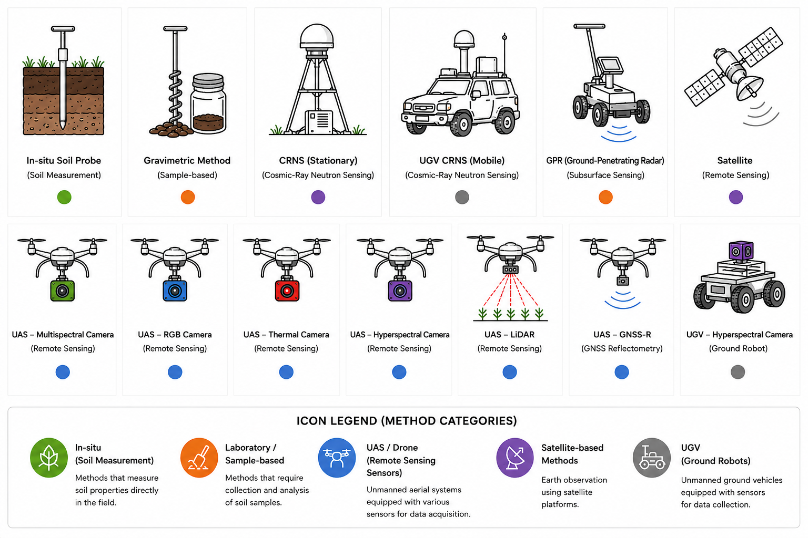
| Reference | Main Thematic Focus | Investigated Platforms | Primary Focus on Soil Moisture? | Primary Focus on UAVs? | Detailed UAV-SM Methods? |
|---|---|---|---|---|---|
| Abdulraheem et al. (2024) | Remote Sensing for Soil Measurements | Satellites, UAV, Proximal |
Yes (Deeply) | No | No |
| Acharya et al. (2021) | Hydrology and Water Management | UAV |
Yes (Broadly) | Yes | No |
| Ali et al. (2024) | Precision Crop Management | Satellites, UAV |
No (Secondary) | Yes | No |
| Amarasingam et al. (2022) | Sugarcane Crop Monitoring | UAV |
No (Briefly) | Yes | No |
| Aslan et al. (2024) | Precision Agriculture in Open Fields | UAV |
No | Yes | No |
| Awais et al. (2023) | Plant Stress via Thermal Imaging | UAV |
Yes (Indirectly) | Yes | No |
| Bogena et al. (2022) | Noninvasive Soil Moisture Sensing | In-situ (CRNS, WSN) |
Yes (Deeply) | No | No |
| Dong et al. (2024) | Crop Water Stress Detection | UAV, Satellites |
Yes (Indirectly) | Yes | No |
| (Eladl2024b?) | Smart Agriculture and AI | UAV |
No | Yes | No |
| Florea et al. (2025) | Smart Irrigation in Viticulture | Various |
Yes (Broadly) | No | No |
| Fuentes-Peñailillo et al. (2025) | Precision Irrigation Dynamics | RS, WSN, UAV |
Yes (Broadly) | No | No |
| Haokip et al. (2025) | Soil Moisture Assessment Methods | Satellites, UAV, In-situ |
Yes (Deeply) | No (Broad focus) | No |
| Kaivosoja et al. (2021) | Reference Data in Agriculture | UAV |
No | Yes | No |
| Karthikeyan et al. (2020) | ML for Biomass & Soil Moisture | Satellites |
Yes (Deeply) | No | No |
| Kuunya et al. (2025) | Sensors for Water Management | In-situ, IoT |
Yes (Deeply) | No | No |
| Łągiewska and Panek-Chwastyk (2025) | Robotics & RS in Agriculture | RS, UAV, Robots |
No (Secondary) | Yes | No |
| Mamun et al. (2026) | IoT in Smart Agriculture | WSN, IoT |
No (Secondary) | No | No |
| Mkhwenkwana et al. (2025) | Soil Moisture in Crop Production | Satellites |
Yes (Deeply) | No | No |
| Mowla et al. (2026) | UAV and ML in Smart Agriculture | UAV |
Yes (Broadly) | Yes | No |
| P et al. (2025) | Advancements in SM Estimation | Satellites, UAV, In-situ |
Yes (Deeply) | No | No |
| Petrovic and Csambalik (2025) | Precision Agriculture Adaptation | Various |
No (Secondary) | No | No |
| Sivakumar et al. (2025) | Thermal Imaging in Agriculture | UAV, Satellites |
Yes (Indirectly) | Yes | No |
| Talaviya et al. (2020) | AI and Drones in Agriculture | UAV |
No (Secondary) | Yes | No |
| Teixeira et al. (2025) | High-Resolution SM Estimation | Satellites, UAV |
Yes (Deeply) | No | No |
| Tsaousidis et al. (2026) | Digital Twins in Agriculture | All Platforms |
No (Briefly) | No | No |
| Wadod and Mohammed (2023) | Drone Application Methodologies | UAV |
No | Yes | No |
| Yadav et al. (2024) | UAVs for Irrigation Scheduling | UAV |
Yes (Indirectly) | Yes | No |
| Yousaf et al. (2023) | UAV and Robotics in Farms | UAV, Robotics |
No | Yes | No |
| Zhang et al. (2024) | On-the-go Sensors for Soil Moisture | Proximal, UAV |
Yes (Deeply) | No | No |
| This Review | UAV-enabled Soil Moisture Monitoring | UAV (Fusion with Sat/In-situ) |
Yes (Deeply) | Yes | Yes |
| Platform Combinations | Soil Moisture Monitoring Specifics | Sensors and Technologies Used | Processing Method and Key Findings | Sources |
|---|---|---|---|---|
| In-situ Only (Ground Networks) |
Highly accurate point data, moisture profile measurements at different depths in the root zone (SMC, VWC). | TDR (Time-Domain Reflectometry), FDR, Capacitance Sensors, Tensiometers, Neutron Probes, WSN/IoT Networks. | Provide absolute “truth” for models, but do not scale well to large areas due to high logistical costs and local soil heterogeneity. | Bogena et al. (2022), Haokip et al. (2025), Loconsole et al. (2025), P et al. (2025) |
| Satellites Only |
Surface Moisture Monitoring (SSM) over large areas. | Microwave radars (SAR - Sentinel-1, SMAP), GNSS-R reflectometry, optical/thermal sensors (Sentinel-2, Landsat). | Microwaves penetrate clouds but have coarser spatial resolution. Optical data is affected by cloud cover and the signal is often suppressed by dense vegetation. | Mkhwenkwana et al. (2025), P et al. (2025), Pablos et al. (2025) * |
| UAV only |
Provides ultra-high (centimeter) resolution at the field level and allows flying below clouds. | Multispectral, hyperspectral and thermal cameras, miniaturized ground penetrating radars on drones (UAV-GPR). | Optical sensors monitor stress in plants, while technologies like UAV-GPR can directly map dielectric constant and moisture in the root zone without soil contact. | Dong et al. (2024), Haokip et al. (2025), Kashyap and Kumar (2021), Zhang et al. (2024) |
| Satellites + In-situ |
Calibration of satellite surface moisture estimates and their connection with deeper root zone moisture. | Connection of satellite radar (SAR) and optical data with continuous measurements from IoT sensor networks. | Ground data is used to validate, correct satellite measurements and refine hydrological models. | Mkhwenkwana et al. (2025), P et al. (2025) |
| Drones + In-situ |
Obtaining accurate high-resolution SMC. | UAV imaging supplemented with simultaneous measurements from soil TDR and capacitive sensors. | Machine learning connects surface manifestations captured by drone with the actual state of the soil in deeper layers. | Haokip et al. (2025), Zhang et al. (2024) |
| Satellites + Drones |
Downscaling that refines coarse satellite maps. | Combination of satellite SAR (C-band) or optics (Sentinel) with multispectral and thermal imaging from UAVs. | UAVs provide detailed data even in cloudy conditions, while satellites provide a broader context and time series. | Bazrafkan et al. (2025), Teixeira et al. (2025) |
| Satellites + Drones + In-situ |
The most advanced predictive models, full 3D fusion and so-called Digital Twins. | Space-Air-Ground networks; IoT probes in the soil + autonomous UAV swarms + satellite constellations connected via Cloud and artificial intelligence. | In-situ networks deliver real-time accuracy, drones provide final detail and satellites global patterns. Deep learning models help predict drought and plan irrigation. | P et al. (2025), Saki et al. (2025), Tsaousidis et al. (2026) |
* Conference paper.
=== DATA PROCESSING REPORT ===
Date: 2026-09-06 09:25:36.772293
INPUT:
Scopus: 1003
WoS: 633
Merged: 1636
CLASSIFICATION:
correct_record: 1133
duplicate_doi: 473
missing_doi: 22
duplicate_title: 5
non_article_type: 3
FINAL:
Retained: 1133
Removed: 503=== KEYWORD & CATEGORY STATISTICS ===
Total records: 1018
PLATFORM:
UAV: 259
Satellite: 609
SCALING:
downscaling: 73
data fusion: 58
multi-scale: 16
UAV APPLICABILITY:
Direct UAV: 259
Potential UAV: 226
Combined: 443
Non-UAV: 575
SENSOR MODE:
Active: 249
Passive: 225
DOMAIN:
cropland: 112
farmland: 72
arable: 25
bare soil: 39
agriculture: 887=== SCREENING SUMMARY (PRISMA READY) ===
Records (non-review): 1018
Review articles: 115
UAV-related reviews: 57
SCREENING DECISIONS:
Include: 249 (24.5%)
Maybe: 724 (71.1%)
Exclude: 45 (4.4%)
PRIORITIZATION:
Must-cite (extended): 48
Must-cite (strict): 22| Study | Input Data Modalities | Sensor / Spectral–Frequency Specs | Specific Extracted Variables & Layers | Spatiotemporal Alignment & Data Fusion Strategy | Ground-Truth Reference |
|---|---|---|---|---|---|
| Basurto-Lozada et al. (2020) | UAV TIR, RGB |
UAV: FLIR Vue Pro-R (TIR), Micasense Sequoia | Orthomosaics, LST, NDVI | Image registration algorithms; temporal synchronization | NR (iButtons for LST only) |
| Bhatti et al. (2020) | Landsat 7/8, UAV MS, TIR 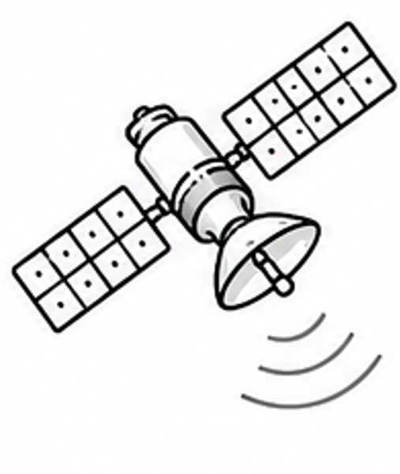 |
Sat: Landsat; UAV: MS, TIR | VIs, LST, ETa | Spatial scaling; footprint stacking | Neutron probe (NP) |
| Capolupo et al. (2026) * ‡ | Systematic Review | Sat / UAV: Various EO Data (NR) | FAPAR, VIs, LST | Meta-analytical synthesis | NR |
| Chakhar et al. (2021) | C-SAR (Sentinel-1), Sentinel-2, UAV MS |
Sat: Sentinel-1 (C-band), Sentinel-2; UAV: MS | VV/VH backscatter, NDVI, roughness | Spatial resampling to 10 m grid; spatial averaging | FDR / Capacitance (METER, 5 cm) |
| Chandel et al. (2021) | UAV MS, TIR |
UAV: MS, TIR (NR) | LST, VIs, Energy balance | Pixel-level geometric alignment | NR |
| Chaparro et al. (2024) | UAV MS |
UAV: DJI Phantom 4 Multispectral | VIs (NDVI, OSAVI, NDRE) | Cross-validation spatial splitting; grid resampling | Laboratory (Kjeldahl for N; proxy, not SMC) |
| Chávez et al. (2020) ‡ | Meta-analysis / Review | UAS: MS, Thermal (NR) | ET, LST, VIs | Review of spatial upscaling/downscaling | NR |
| Chen et al. (2024) | UAV MS |
UAV: MS (560, 650, 730, 860 nm) | 6 VIs, LAI, canopy structure | Sample set partitioning (SPXY); zonal statistics | In-situ SMC measurements |
| Choudhari et al. (2024) * | IoT Sensors, Edge Computing 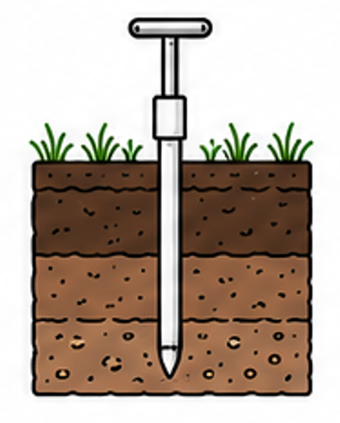 |
Ground/IoT: Sensor nodes (NR) | Absolute SMC, environmental metrics | Data aggregation; real-time synchronization | IoT Soil Sensors |
| Chu et al. (2026) | UAV RGB, MS, TIR |
UAV: DJI Mavic 3 Multispectral / Thermal | LST, VIs, temporal sequences | Geometric alignment; Stacking ensemble fusion | In-situ SMC measurements |
| Döpper et al. (2022) | UAS Hyperspectral |
UAS: Nano-Hyperspec (399–1001 nm) | VIS-NIR reflectance, LAI | Spatial alignment with in-situ; physiological time lag | FDR (ML3 ThetaProbe, Delta-T) |
| Du et al. (2024) | UAV Hyperspectral |
UAV: HS (NIR: 750–850 nm, SWIR: 1060–1080 nm) | NIR/SWIR narrowbands | Pixel-level extraction; spectral lookup table downscaling | NR |
| Farhad et al. (2025) | UAS GNSS-R, LiDAR, MS 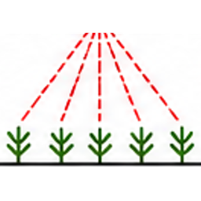 |
UAS: GNSS-R (L-band), TrueView 515 LiDAR, MicaSense | Reflectivity, point cloud metrics, VIs | Geographic synchronization of specular points | In-situ SM Probes (EC-5) |
| Feng et al. (2025) | UAV MS, LiDAR |
UAV: MS, LiDAR (NR) | VIs, slope, plant structure (PS) | Variance inflation factor (VIF) filtering; zonal extraction | Destructive (AGB; proxy, not SMC) |
| García-Rodríguez et al. (2026) | In-situ, UAV, Satellites |
Sat: Sentinel-3, MODIS, Meteosat; UAV / Ground | FAPAR, LST, Meteorological data | Semantic Web integration (RDF triples, SPARQL) | In-situ VAS sensor network |
| Guo et al. (2022) | UWB Radar, UAV MS |
Ground: PulsOn440 UWB (3.1–4.8 GHz); UAV: MS | Radar time-domain features, VIs | Temporal synchronization; correlation alignment | In-situ probe (TR-6D) |
| He et al. (2025) | Sentinel-2, UAV MS |
Sat: Sentinel-2A; UAV: Sequoia MS | VIs, soil moisture & salinity | Pixel-to-point matching; spatial downscaling | In-situ SMC measurements |
| He et al. (2026) | UAV MS |
UAV: MS (550, 660, 735, 840 nm) | VIs, multi-temporal sequences | Temporal alignment using LSTM and Attention | In-situ SM detector (PR-3001) |
| Heistermann et al. (2023) | CRNS, GNSS-R, UAS HS |
Ground: CRNS, GNSS-R (L-band); UAS: Nano-Hyperspec | Epithermal neutrons, VWC, spectra | Footprint weighting; spatial interpolation | CRNS, Tensiometer, Gravimetric |
| Hussain et al. (2025) | Landsat 8/9, Sentinel-2, UAV MS |
Sat: Landsat 8/9, Sentinel-2; UAV: MicaSense | NDWI, MVI, WSI | Cross-sensor spatial calibration; radiometric normalization | NR |
| Inocencio et al. (2025) * | UAV Multispectral |
UAV: MS (NR) | Spectral reflectance ranges | Zonal statistics; pixel-based thresholding | Gravimetric (soil samples to 5 cm) |
| Keshavarz et al. (2025) | IoT, Microwave Sensors |
Ground/IoT: Differential Microwave Sensor (BLE 2.4 GHz) | Dielectric permittivity | High-frequency temporal alignment; Transformer fusion | NR |
| Liu et al. (2024) | UAV Hyperspectral |
UAV: Cubert S185 (450–950 nm) | FOD, CWT, LAI, LCC | High-dimensional alignment (PLS); zonal extraction | Field sampling |
| Liu et al. (2026) | UAV Multispectral |
UAV: DJI P4M & MicaSense RedEdge-MX | VIs, GLCM texture, DSM | Band-matching across platforms; domain adaptation | NR |
| Niu et al. (2022) | UAV Multispectral |
UAV: MicaSense RedEdge M | NDVI, Crop Coefficient (Kc) | High-resolution spatial registration | NR |
| Niu et al. (2025) | UAV RGB |
UAV: RGB (NR) | Multiscale image features | Multiscale feature fusion (YOLOv8 + LSKNet) | NR |
| Pacheco Gil et al. (2025) | UAV MS, Satellites |
Sat: Sentinel-2; UAV: MS | VIs, Kc, change detection | Spatiotemporal cloud masking and resampling (GEE) | Visual interpretation (proxy, not SMC) |
| Rafi et al. (2026) | UAV MS, LiDAR |
UAV: MicaSense, GeoCue TrueView 515 LiDAR | NDRE, RVI, Canopy entropy | Spatial averaging over crop boundaries | Harvested crop yield (lb/plt; proxy, not SMC) |
| Senyurek et al. (2022) | UAS GNSS-R, MS |
UAS: GNSS-R (L-band ~1.57 GHz), MicaSense | Reflectivity, VIs | Geographic matching of specular reflection tracks | In-situ SM Probes (HOBO) |
| Shi et al. (2025) | UAV MS, TIR, RGB |
UAV: Yusense MS600, ZENMUSE XT (7.5–13.5 µm) | Stacked VIs, thermal / texture indices | Pixel-wise geometric co-registration | Gravimetric (oven-drying) |
| Shokati et al. (2025) | Sentinel-2, Landsat, UAV HS |
Sat: Sentinel-2, Landsat-8/9; UAV: CoSpectroCam | MS bands, HS continuous bands | Spatial downscaling; cross-sensor spatial calibration | In-situ SMC measurements |
| Soultane et al. (2024) | WSN, IoT |
Ground/IoT: Sensor nodes | Sap flow, SMC | Real-time temporal synchronization; edge-computing | Soil Moisture Sensors (IoT) |
| Tauro et al. (2022) | UAV Thermal, MS |
UAV: FlyNovex / DJI (TIR, RGB); Sat: Sentinel-2A | LST, VIs, Coarse/Fine Albedo | Consistent spatial aggregation for energy balance | TDR (SM150, Delta-T) |
| Wang et al. (2024) | UAV MS, TIR, Satellites |
UAV: MS, TIR (7.5-13.5 µm); Sat: FY-4A/AGRI | LST, VIs | Resolution downscaling | In-situ WET-2 sensor (FDR) |
| Wang et al. (2026) | Regional / Global Scale |
Sat: CYGNSS (L-band), SMAP (L-band), MODIS | Coarse SSM, VOD, FVC | Spatial downscaling via OPTRAM and Bayesian method | ISMN Stations (TDR/FDR) |
| Ye et al. (2024) | Manned Aircraft Microwave, TIR | Aircraft: L-band radiometer, TIR, RGB | L-band brightness temp., LST | Footprint matching | FDR (HDAS) |
| Yin et al. (2024) | UAV RGB, MS, TIR |
UAV: DJI P4M, Mavic 3 T (7.5-13.5 µm) | VIs, CHM, TVDI, GLCM Texture | Pixel-wise subtraction; spatial autocorrelation (Moran’s I) | Gravimetric (dried at 105°C) |
| Young et al. (2025) * | UAV MS, TIR, Pan |
UAV: MicaSense Altum-PT | VIs, structural traits | Flight path optimization (Zig-Zag) | NR |
| Yu et al. (2022) | UAV MS, Satellites |
UAV: MicaSense; Sat: PlanetScope | VIs, LAI | Spatial resampling to match macro/micro footprints | FDR (ML3 ThetaProbe, Delta-T) |
| Zajc et al. (2023) * | GPR, MS, TIR |
Ground: GPR (230/400/600/900 MHz); UAV: MS, TIR | Dielectric permittivity, LST, VIs | Spatial alignment of 2D GPR transects with 3D aerial grids | NR |
| Zappa et al. (2019) | Satellites |
Sat: Metop ASCAT (C-band), SMAP (L-band) | Coarse SSM, Topography | Spatial downscaling projecting microwave footprints | ISMN Stations (TDR/FDR/Capacitance) |
| Zhang et al. (2023) | UAV RGB, MS, TIR |
UAV: MicaSense, FLIR Vue Pro R (7.5-13.5 µm) | VIs, LST, color indices | Exact spatial co-registration; zonal statistics | In-situ SMC measurements |
| Zhang et al. (2025) | UGV Hyperspectral |
UGV: SPECIM FX10 (VNIR: 400-1000 nm) | Narrowband reflectance, 1D/2D SG | Field-level coordinate matching | Gravimetric |
| Zhang et al. (2026) | UAV MS, Satellites |
UAV: DJI Phantom 4 Multispectral; Sat: PlanetScope | Narrowband VIs, Texture | Spatial registration | Gravimetric (oven-drying) |
| Zhuang et al. (2023) ‡ | Optical (SWIR), TIR | Sat / UAV: Optical, Thermal (Review) | Reflectance, LST, TVDI | Review of empirical and physical modeling (e.g., MARMIT) | NR |
* Conference paper ‡ Review / meta-analysis NR – not reported.
| Study | Target Application Category | Specific Crops / Land Cover | Phenological Stages Analyzed | Key Local Challenges & Interferences | Spatial Scale |
|---|---|---|---|---|---|
| Basurto-Lozada et al. (2020) | Bare Soil / Arable 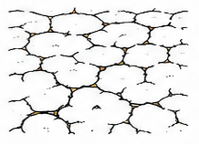 |
Bare soil, Cropland | Pre-planting | Topographic variations and surface roughness. | Field |
| Bhatti et al. (2020) | Arable Crops 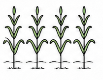 |
Maize, Soybean | Vegetative to maturity | Canopy occlusion; partitioning evaporation from transpiration. | Field |
| Capolupo et al. (2026) * ‡ | Orchards & Vineyards 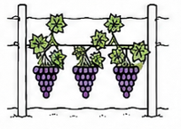 |
Vineyards | Full season | Complex canopy geometry and varying row orientations. | Regional |
| Chakhar et al. (2021) | Arable Crops / Bare 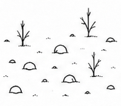 |
Bare soil, Cereal, Peas, Onion | Multi-stage (variable by crop) | Diverse crop architectures and changing surface roughness over time. | Field |
| Chandel et al. (2021) | Orchards & Vineyards |
Apple orchard, Vineyard | Mid-season (August) | Sub-field heterogeneity and inter-row shadowing effects. | Sub-field to field |
| Chaparro et al. (2024) | Arable Crops |
Pineapple | Vegetative growth | Dense, overlapping rosette canopy structure masking the soil. | Field |
| Chávez et al. (2020) ‡ | Mixed Agriculture 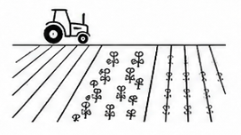 |
Irrigated Agriculture | Multi-stage | Spatial scaling across diverse, heterogeneous crop types. | Field to regional |
| Chen et al. (2024) | Arable Crops |
Summer maize | V6, V10, V12, R1 stages | High and dynamic canopy coverage severely limiting soil visibility. | Field |
| Choudhari et al. (2024) * | Mixed Agriculture |
General Precision Agriculture | NR | Real-time monitoring across variable field conditions. | Field |
| Chu et al. (2026) | Arable Crops |
Winter wheat | Jointing, heading, grain-filling | Rapidly changing structural and spectral traits during maturation. | Field |
| Döpper et al. (2022) | Grasslands 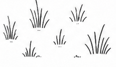 |
Mown, grazed, and permanent | Throughout vegetation period | Thatch layer (dead biomass) and physiological time-lags in response. | Field / site |
| Du et al. (2024) | Arable Crops |
Soybean, Canola, Wheat | Full growth cycle | Distinguishing canopy water content from actual soil moisture. | Field |
| Farhad et al. (2025) | Arable Crops |
Corn, Cotton | Planting to harvest (full cycle) | Temporal variations in biomass and severe signal attenuation by mature crops. | Field (~2.3 ha) |
| Feng et al. (2025) | Arable Crops |
Maize | V6, VT, R4 stages | Canopy structural complexity influencing multi-angular reflectance. | Field |
| García-Rodríguez et al. (2026) | Orchards & Vineyards |
Vineyards (Regional scale) | Multi-year continuous (2018–2023) | Integration of multi-resolution data across vast, heterogeneous topographies. | Regional |
| Guo et al. (2022) | Arable Crops |
Winter wheat | Tillering to maturity | Penetrating dense wheat canopies with microwave and optical signals. | Field |
| He et al. (2025) | Arable Crops |
Cotton | Pre-sowing, seedling, squaring, flower-bolling | Co-occurrence of soil salinization and moisture stress. | Field |
| He et al. (2026) | Orchards / Arable |
Kiwifruit, Cotton | Multi-temporal sequences | Non-linear temporal dynamics and environmental noise. | Canopy to field |
| Heistermann et al. (2023) | Mixed Agriculture |
Orchards, Meadows, Field crops | 3-year continuous | Extreme spatial heterogeneity across distinct adjacent biomes. | Local / transect |
| Hussain et al. (2025) | Arable Crops |
Peanut | Pre-harvest stages | Complex leaf architecture and dense ground cover. | Field |
| Inocencio et al. (2025) * | Bare Soil |
Bare soil (ploughed) | Uncultivated | Soil texture variations and localized ponding. | Field / plot |
| Keshavarz et al. (2025) | Mixed Agriculture |
Agricultural field | NR | Depth-dependent variability of dielectric permittivity. | Point to field |
| Liu et al. (2024) | Arable Crops |
Summer maize | Jointing, tasseling, filling, ripening | Decoupling water stress signals from pigment concentration changes. | Field |
| Liu et al. (2026) | Orchards & Vineyards |
Citrus canopy | Active growth phase | 3D canopy background noise and inter-row bare soil mixing. | Canopy / orchard |
| Niu et al. (2022) | Orchards & Vineyards |
Pomegranate canopy | Full season | Tree crown shading and accurate pure-canopy pixel extraction. | Canopy / orchard |
| Niu et al. (2025) | Arable Crops |
Maize seedlings | Early vegetative (Seedling) | Very small target size and dominant soil background interference. | Field |
| Pacheco Gil et al. (2025) | Arable / Forest 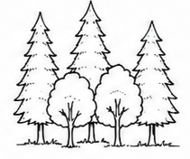 |
Dry beans, Forest cover | Multi-temporal | Cloud cover and rapid crop physiological changes. | Landscape |
| Rafi et al. (2026) | Arable Crops |
Corn, Cotton | Weekly monitoring (full cycle) | Management practice variations and temporal data gaps. | Field |
| Senyurek et al. (2022) | Arable Crops |
Corn, Cotton | Vegetative to mature | Signal scattering caused by dense vegetation volume. | Field |
| Shi et al. (2025) | Arable Crops |
Winter oilseed rape | Seedling, budding, flowering | Massive spectral shift during the flowering stage (yellow petals). | Field |
| Shokati et al. (2025) | Mixed Agriculture |
Bare soil, Cropland, Grassland | 14 field campaigns | Scaling errors across abruptly changing adjacent land covers. | Field to landscape |
| Soultane et al. (2024) | Mixed Agriculture |
Agricultural field | Summer growth | Decoupling atmospheric demand from actual soil water deficit. | Field |
| Tauro et al. (2022) | Orchards & Vineyards |
Poplar trees (SRC) | Mid-summer (drought periods) | Disentangling tree transpiration from understory/soil evaporation. | Canopy |
| Wang et al. (2024) | Arable Crops |
Winter wheat | Jointing, booting, flowering, filling | High-frequency thermal fluctuations and varying canopy closure. | Field to regional |
| Wang et al. (2026) | Regional / Global 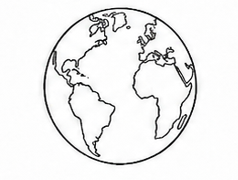 |
Diverse (Global grid) | 5-year continuous (2019–2023) | Extreme macro-scale heterogeneity in topography and vegetation. | Regional to global |
| Ye et al. (2024) | Grasslands |
Pasture / Paddocks | Late spring / early summer | Variable surface roughness and patchy vegetation density. | Paddock / field |
| Yin et al. (2024) | Arable / Forage |
Alfalfa | Regrowth cycles (multi-cut) | Fast canopy regrowth leading to rapid saturation of optical indices. | Field / plot |
| Young et al. (2025) * | Arable Crops |
Spring oats | Early emergence | Differentiating tiny emerging shoots from dry soil backgrounds. | Field |
| Yu et al. (2022) | Arable Crops |
Wheat | Jointing, booting, heading, anthesis | Saturation of optical indices at late phenological stages. | Field |
| Zajc et al. (2023) * | Mixed Agriculture |
Agricultural field | Post-harvest / Pre-planting | Variable soil compaction and localized sub-surface anomalies. | Field / transect |
| Zappa et al. (2019) | Mixed Agriculture |
Agricultural Catchment | Full season | Topographic shading and variable contributing drainage areas. | Catchment |
| Zhang et al. (2023) | Arable Crops |
Maize | Vegetative, reproductive, maturation | Canopy thermal inertia masking underlying soil temperature. | Field |
| Zhang et al. (2025) | Bare Soil |
Bare soil (Lab & Field) | Uncultivated | Background noise from variable mineralogy and organic matter. | Point / plot |
| Zhang et al. (2026) | Arable Crops |
Cotton | Pre-sowing, squaring, flowering-bolling, boll-opening | Soil salinization effects mimicking drought stress symptoms. | Field |
| Zhuang et al. (2023) ‡ | Mixed Agriculture |
Cropland / Grassland | Multi-stage | Complexity of physical radiative transfer inversion. | Field to landscape |
* Conference paper ‡ Review / meta-analysis NR – not reported.
| Study | Application & Crop Type | Extracted Method / Algorithm | Input Data & Extracted Layers | Reported Accuracy (Validation) |
|---|---|---|---|---|
| Basurto-Lozada et al. (2020) | Bare soil, Cropland | Structure from Motion (SfM), Energy Balance | UAV Thermal (TIR), RGB | GSD < 60 mm, surface temperature dynamics correlated with emissivity. |
| Bhatti et al. (2020) | Field (Maize, Soybean) | Spatial Evapotranspiration Model (SETMI) | Landsat 7/8, UAV MS, TIR | High-resolution mapping of evapotranspiration and spatial heterogeneity. |
| Capolupo et al. (2026) * | Vineyard / Regional Scale | Systematic Review (PRISMA) | Earth Observation (EO) Data, Satellites, UAV | Synthesized geomatics and EO approaches for vineyard water status. |
| Chakhar et al. (2021) | Bare soil, Field (Cereal, peas, onion) | Water Cloud Model (WCM), Neural Networks | C-SAR (Sentinel-1), Sentinel-2, UAV MS (NDVI), DSM | R² = 0.74 (bare soil), 0.71 (cereal), 0.72–0.78 (pea). |
| Chandel et al. (2021) | Apple orchard, Vineyard, Field crops | Energy balance (METRIC, TSEB) | UAV MS, TIR | High-resolution ET estimation in sub-field scale. |
| Chaparro et al. (2024) | Field (Pineapple) | ML (XGBoost, MLP, RF) | UAV MS (Vegetation Indices - VIs) | Best model (XGBoost): R² = 0.869 (Nitrogen proxy for condition). |
| Chávez et al. (2020) | Irrigated Agriculture | Meta-analysis / Review | UAS Multispectral, Thermal | Comprehensive assessment of UAS capabilities for ET mapping. |
| Chen et al. (2024) | Field (Summer maize) | ML (RF, PSO-SVM), Grey Relational Analysis | UAV MS, VIs | High accuracy SMC estimation across phenological stages (R² > 0.8). |
| Choudhari et al. (2024) * | Precision Agriculture | Deep Reinforcement Learning, Ensemble Learning | IoT Sensors, Edge Computing | Precision: 94%, Recall: 92%, F1-score: 93%. |
| Chu et al. (2026) | Field (Winter wheat) | ML (BP, SVR, RFR, XGB, GPR), Stacking Ensemble | UAV RGB, MS, TIR, VIs, LST | SVR Stacking (MS+RGB+TIR): R² = 0.76, RRMSE = 0.06. |
| Döpper et al. (2022) | Grassland (Mown, grazed, irrigated) | RTM (PROSAIL) coupled with ML (VHGPR) | UAS Hyperspectral (399–1001 nm), LAI, canopy structure | Fendt site: R² = 0.84, RMSE = 8.66 %vol; Marquardt: R² = 0.40. |
| Du et al. (2024) | Field (Soybean, Canola, Wheat) | Optical Trapezoid Model (OPTRAM) + Transfer Learning | UAV Hyperspectral (NIR: 750–850 nm, SWIR: 1060–1080 nm) | Fine-tuned model: R² = 0.57–0.64, RMSE = 0.008–0.022 m³/m³. |
| Farhad et al. (2025) | Field (Corn, Cotton) | Random Forest (RF) | UAS GNSS-R, LiDAR, MS | RMSE = 0.013 (10-fold) / 0.033 (leave-one-probe-out) m³/m³. |
| Feng et al. (2025) | Field (Maize) | ML (PLSR, SVM, RF) | UAV MS (VIs), LiDAR (Slope, Plant Structure - PS) | RF with VI+PS+SL: R² = 0.93, RMSE = 95.07 kg/ha (AGB). |
| **García-Rodríguez et al. (2026)* | Viticulture / Regional monitoring | Ontology-based Integration (Semantic Web) | In-situ, UAV, Satellites (Sentinel, Landsat) | Semantic harmonisation of 40–50 million RDF triples for EO data. |
| Guo et al. (2022) | Field (Winter wheat) | Convolutional Neural Network Regression (1D-CNNR) | UAV MS, UWB Radar | 1D-CNNR: R² = 0.916, RMSE = 0.0089 cm³/cm³. |
| He et al. (2025) | Field (Cotton) | ML (RF, BPNN, SVM, RBF, LSTM, MLR) | Sentinel-2, UAV MS, Soil moisture & salinity index | RF: R² = 0.763–0.846 (SWC), 0.703–0.843 (SSC). |
| He et al. (2026) | Canopy/Orchard (Kiwifruit), Field (Cotton) | Deep Learning (CNN, LSTM, Attention Mechanism) | UAV MS, VIs | Effective noise filtering and enhanced temporal precision. |
| Heistermann et al. (2023) | Orchards, Meadows, Bare soil | Cosmic-Ray Neutron Sensing (CRNS), GNSS-R | Continuous temporal record | Continuous profiling up to 1000–2000 mm depth. |
| Hussain et al. (2025) | Field (Peanut, irrigated & rainfed) | Random Forest (RF) | Landsat 8/9, Sentinel-2, UAV MS (NDWI, MVI, WSI) | High predictive accuracy (no absolute metrics reported). |
| Inocencio et al. (2025) * | Bare soil | Spectral Response Analysis | UAV Multispectral | Accurate identification of moisture ranges (0.36% - 16.85%). |
| Keshavarz et al. (2025) | Agricultural field | Transformer-based data fusion | IoT, Differential Microwave Sensor | High-sensitivity precision permittivity measurement. |
| Liu et al. (2024) | Field (Summer maize) | Stacked Ensemble Learning Model (SELM) + Bayesian Optimization | UAV Hyperspectral, LPPs (LAI, LCC, LWC) | LPPs fusion model: R² = 0.81, RMSE = 0.016. |
| Liu et al. (2026) | Canopy/Orchard (Citrus) | DL (CNN-LSTM-Attention-XGBoost), Transfer Learning | UAV MS, VIs | Source: R² = 0.830 (SMC 10 cm); Target (fine-tuned): R² = 0.354 (SMC 20 cm). |
| Niu et al. (2022) | Canopy/Orchard (Pomegranate) | Deep Stochastic Configuration Networks (SCNs) | UAV MS (NDVI) | R² = 0.995, RMSE = 0.046 (Crop Coefficient Kc mapping). |
| Niu et al. (2025) | Field (Maize seedlings) | YOLOv8 + LSKNet, Whale Optimization Algorithm | UAV RGB | R² = 0.869, RMSE = 0.0256 (optimal); R² = 0.851 (drought). |
| Pacheco Gil et al. (2025) | Forest cover / Crop | Change Detection, Spectral Indices | UAV, Satellites (GEE) | Accurate crop coefficient (Kc) and land cover change estimation. |
| Rafi et al. (2026) | Field (Corn, Cotton) | ML (LSTM, FNN, RF) | UAV MS (NDRE, RVI), UAV LiDAR (Entropy, Kurtosis) | LSTM: MAPE = 9.89–19.46 % (Field-wise & Year-based validation). |
| Senyurek et al. (2022) | Field (Corn, Cotton) | Random Forest (RF) | UAS GNSS-R, MS | RMSE = 0.013 (10-fold) / 0.033 (leave-one-probe-out) m³/m³; R = 0.95. |
| Shi et al. (2025) | Field (Winter oilseed rape) | ML (BPNN, SVM, RF, ELM) | UAV MS, TIR, RGB (Texture, Structure) | BPNN (Budding stage): R² = 0.826, RMSE = 0.009. |
| Shokati et al. (2025) | Bare soil, Cropland, Grassland | ML (GPR, ELM, PLSR, SVR, ANN) | UAV Hyperspectral, Sentinel-2, Landsat-8/9 | GPR (UAV): R² = 0.89; GPR (Landsat): R² = 0.64. |
| Soultane et al. (2024) | Agricultural field | Wireless Sensor Network (WSN), IoT, ML | Sap flow, Soil Moisture Sensors | Robust water sap flow and automatic irrigation control. |
| Tauro et al. (2022) | Canopy/Orchard (Poplar trees) | Surface Energy Balance (TSEB) | UAV Thermal, MS, Coarse/Fine Albedo | Analyzed via ANOVA (F-test p < 0.05), identifies water stress. |
| Wang et al. (2024) | Field (Winter wheat) / Regional | Data Fusion, LST retrieval | UAV MS, TIR, Satellites | High diagnostic accuracy of LST and crop water stress. |
| Wang et al. (2026) | Regional / Global Scale | Spatiotemporal Downscaling | CYGNSS, SMAP, MODIS | Enhanced spatial resolution preserving temporal dynamics. |
| Young et al. (2025) * | Field (Spring oats) | Flight Path Optimization (Zig-Zag) | UAV MS (MicaSense Altum-PT) | Optimization of field area sampled vs. flight time. |
| Ye et al. (2024) | Pasture/Paddocks | L-Band passive microwave modeling | Manned aircraft L-band radiometer, TIR, RGB | Successful retrieval of L-band brightness temperature. |
| Yin et al. (2024) | Field (Alfalfa under deficit & full irrigation) | ML (PLSR, SVM, RF), Deep Neural Network (DNN) | UAV MS, TIR, RGB, GLCM Texture, CHM | DNN (Multimodal): R² = 0.72–0.75, RMSE = 4.83–5.14 %. |
| Yu et al. (2022) | Field (Wheat) | ML (SVR, RF) | UAV MS (MicaSense), PlanetScope, VIs, LAI | RF (Satellite): R² = 0.83; SVR (UAV): R² = 0.74. |
| Zajc et al. (2023) * | Agricultural field | GPR Integration | MS, TIR, Ground Penetrating Radar | Detailed root-zone profiling and anomaly detection. |
| Zappa et al. (2019) | Agricultural Catchment (Various) | Downscaling with Random Forest | Metop ASCAT, SMAP, Topography (DEM) | High resolution scaling for hydrological modeling. |
| Zhang et al. (2023) | Field (Maize) | ML (RFR, PLSR, KNN) | UAV RGB, MS, TIR | RFR (MS+RGB+TIR): R² = 0.78, rRMSE = 19.36 % (200 mm depth). |
| Zhang et al. (2025) | Bare soil (Laboratory & Field) | Deep Learning (1D-CNN, LSTM) vs. PLSR | UGV Hyperspectral (Vis-NIR) | 1D-CNN: R² = 0.91, RMSE = 4.87 %; PLSR: R² = 0.72. |
| Zhang et al. (2026) | Field (Cotton) | Seagull Optimization Algorithm-RF (SOA-RF) | UAV MS (DJI P4M), PlanetScope, Texture | R² = 0.91–0.97, RMSE = 0.04–0.09. |
| Zhuang et al. (2023) | Cropland / Grassland | RTM (MARMIT) Review / Modeling | Optical (SWIR), TIR | Robust modeling of soil reflectance and moisture relationships. |
* Conference paper ‡ Review / meta-analysis NR – not reported.
| Platform Category | Specific Platforms & Sensor Configurations | Spatial Resolution | Coverage Area | Primary Application in Soil Moisture Studies | References |
|---|---|---|---|---|---|
| Satellite-based Platforms |
Optical, thermal and microwave satellites (e.g., Landsat 8/9, Sentinel-2, SMAP, CYGNSS, PlanetScope, GNSS constellations). |
10 m to 36 000 m (e.g., Sentinel-2 at 10 m; SMAP at 9 000–36 000 m; CYGNSS downscaled to 500 m). | Regional to Global scale (Hundreds to thousands of km²). |
Maocrscopic continuous monitoring, spatio-temporal downscaling to field levels, and evaluation of large-scale hydrological models. | Bhatti et al. (2020), Capolupo et al. (2026) *, García-Rodríguez et al. (2026), He et al. (2025), Hussain et al. (2025), Chakhar et al. (2021), Pacheco Gil et al. (2025), Senyurek et al. (2022), Shokati et al. (2025), Tauro et al. (2022), Wang et al. (2024), Wang et al. (2026), Yu et al. (2022), Zappa et al. (2019), Zhuang et al. (2023) |
| Unmanned Aerial Systems (UAS) |
Integration of multispectral, RGB and thermal cameras, hyperspectral scanners, LiDAR systems and airborne GNSS-R receivers. |
10 mm to 5 m (e.g., 25–50 mm for optical payloads; ~5 m footprint for GNSS-R). | Field scale (Units to tens of hectares per flight; e.g., 2.3 to 10 ha). |
Ultra-high resolution mapping to bridge the scale gap between point measurements and satellites, identification of intra-field heterogeneity, and precision irrigation scheduling. | Basurto-Lozada et al. (2020), Bhatti et al. (2020), Capolupo et al. (2026) *, Chakhar et al. (2021), Chandel et al. (2021), Chaparro et al. (2024), Chávez et al. (2020), Chen et al. (2024), Chu et al. (2026), Döpper et al. (2022), Du et al. (2024), Farhad et al. (2025), Feng et al. (2025), García-Rodríguez et al. (2026), Guo et al. (2022), He et al. (2025), He et al. (2026), Heistermann et al. (2023), Hussain et al. (2025), Inocencio et al. (2025) *, Liu et al. (2024), Liu et al. (2026), Niu et al. (2022), Niu et al. (2025), Pacheco Gil et al. (2025), Rafi et al. (2026), Senyurek et al. (2022), Shi et al. (2025), Shokati et al. (2025), Tauro et al. (2022), Ye et al. (2024), Yin et al. (2024), Young et al. (2025) *, Yu et al. (2022), Zajc et al. (2023) *, Zhang et al. (2023), Zhang et al. (2026), Zhuang et al. (2023) |
| Ground-based Mobile Platforms (UGV & Roving) |
Autonomous ground vehicles (UGV) equipped with hyperspectral sensors, mobile CRNS detectors (roving) and ground penetrating radar (GPR). |
Millimeter-level to tens of meters (aggregations along transects). | Sub-field and Transects (Dependent on vehicle mobility and terrain). |
Continuous on-the-go monitoring without atmospheric interference or crop canopy occlusion, automated multi-depth assessment, and spatial validation of stationary nodes. | Heistermann et al. (2023), Zajc et al. (2023) *, Zhang et al. (2025) |
| In-situ & Stationary Systems |
Stationary capacitance and TDR probes, tensiometers and permanent clusters of cosmic-ray neutron sensors (CRNS). |
Point measurements (~0.2 L volume for probes) up to large footprints (100–200 m radius for CRNS). | Micro-scale to Local zones (Point scale to ~10 ha). |
High-frequency continuous temporal monitoring, deep root-zone profile assessment, and absolute ground truth provision for remote sensing model calibration. | Basurto-Lozada et al. (2020), Bhatti et al. (2020), Chakhar et al. (2021), Chandel et al. (2021), Chaparro et al. (2024), Choudhari et al. (2024) *, Farhad et al. (2025), García-Rodríguez et al. (2026), Guo et al. (2022), He et al. (2026), Heistermann et al. (2023), Keshavarz et al. (2025), Rafi et al. (2026), Senyurek et al. (2022), Shi et al. (2025), Soultane et al. (2024), Tauro et al. (2022), Wang et al. (2024), Zappa et al. (2019) |
| Laboratory & Sample-based Methods |
Destructive gravimetric method based on field soil sampling and laboratory drying. |
Point measurement (individual physical sample). | Sample scale (Micro-scale). |
Acquisition of absolute reference values (thermo-gravimetric ground truth) for rigorous verification and calibration of all proximal and remote sensing techniques. | Chakhar et al. (2021), Chaparro et al. (2024), Farhad et al. (2025), Inocencio et al. (2025) *, Zhang et al. (2025), Zhang et al. (2026) |
* Conference paper.
| Sensor Category | Physical Principle & Spectral Range | Primary Target Variables for SMC Retrieval | Key Advantages & Limitations | References |
|---|---|---|---|---|
| RGB & Multispectral (MS) |
Passive optical sensors detecting reflected radiation in the visible (400–700 nm) and near-infrared (NIR, Red-Edge; 700–1000 nm) spectrum. | Vegetation indices (NDVI, NDRE, GNDVI), fraction of vegetation cover (FVC), structural and textural parameters (GLCM). | Benefit: High spatial resolution, low weight, affordability. Limits: Inability to penetrate below the soil surface, signal is dependent on solar illumination and interfered with by cloud cover. |
Bhatti et al. (2020), Chakhar et al. (2021), Chandel et al. (2021), Chaparro et al. (2024), Chen et al. (2024), Chu et al. (2026), Feng et al. (2025), He et al. (2025), Hussain et al. (2025), Inocencio et al. (2025), Liu et al. (2026), Niu et al. (2022), Niu et al. (2025), Pacheco Gil et al. (2025), Rafi et al. (2026), Shi et al. (2025), Yin et al. (2024), Young et al. (2025), Zhang et al. (2023), Zhang et al. (2026) |
| Thermal Infrared (TIR) |
Passive detection of emitted long-wave infrared radiation (LWIR; typically 8–14 µm) to estimate surface temperature. | Surface Temperature (LST), Crop Water Stress Index (CWSI), Temperature Vegetation Dryness Index (TVDI). | Benefit: Direct link to evapotranspiration and crop water stress. Limits: Coarser spatial resolution compared to MS sensors, high dependence on microclimatic conditions (wind, air humidity). |
Basurto-Lozada et al. (2020), Bhatti et al. (2020), Chandel et al. (2021), Chu et al. (2026), Liu et al. (2026), Niu et al. (2022), Shi et al. (2025), Tauro et al. (2022), Wang et al. (2024), Yin et al. (2024), Zhang et al. (2023) |
| Hyperspectral (HS) |
Passive optical scanning in hundreds of narrow continuous bands (typically 400–1000 nm to 2500 nm). | Narrowband derivatives of reflectance, detailed physiological parameters of leaves (water content LWC, chlorophyll LCC). | Benefit: Extreme information density for deep physiological diagnostics. Limits: Significant computational effort (curse of dimensionality), the need for complex data reduction (e.g. PLSR, PCA). |
Döpper et al. (2022), Du et al. (2024), Heistermann et al. (2023), Liu et al. (2024), Shokati et al. (2025) |
| Microwave, GNSS-R & LiDAR |
Passive reception of reflected GNSS signals (L-band) or active laser scanning (LiDAR) and georadar. | Estimate of surface reflectivity, 3D structure of the canopy, detection of subsurface anomalies. | Benefit: Ability to penetrate cloud cover and vegetation cover. Limits: The signal is strongly distorted by surface roughness and complex biomass structure. |
Farhad et al. (2025), Feng et al. (2025), Rafi et al. (2026), Senyurek et al. (2022), Zajc et al. (2023) |
| In-situ & IoT Sensors |
Contact measurement of dielectric permittivity (TDR, capacitance) in edge computing networks. | Absolute volumetric soil moisture (VWC) in the profile, calibration and reference (ground-truth) data. | Benefit: High accuracy and continuous recording in real time. Limits: Strictly point coverage, invasiveness of measurement and limited areal scalability. |
Choudhari et al. (2024), Keshavarz et al. (2025), Soultane et al. (2024) |
| Study & Sensors | Flight Parameters & Weather (Alt, Overlaps, Time, Weather) | Data Quality (GSD & Radiometric Calibration) | Site Characteristics (Area, Terrain, Soil Type) | Agronomic Target (Target Soil Depth & Growth Stage) |
|---|---|---|---|---|
| Basurto-Lozada et al. (2020) |
Alt: 30 m Overlaps: N/A Time: N/A Weather: Clear sky |
GSD: < 60 mm Calib: Atmospheric & emissivity correction |
Area: N/A Terrain: Bare soil, grass, cropland Soil: N/A |
Depth: Surface Stage: N/A (multiple covers) |
| Chandel et al. (2021) |
Alt: N/A Overlaps: N/A Time: N/A Weather: N/A |
GSD: 70 & 130 mm Calib: Reflectance panel & DLS |
Area: N/A Terrain: Commercial vineyard Soil: N/A |
Depth: Direct-root-zone (via ET) Stage: DOY 192–256 (Mid-season) |
| Chen et al. (2024) |
Alt: 50 m Overlaps: 85% front, 75% side Time: N/A Weather: Clear, windless |
GSD: 10–20 mm Calib: 25% reflection reference target |
Area: 4 distinct fields Terrain: Summer maize Soil: Loam |
Depth: 100, 200, 300, 400 mm Stage: Jointing to Maturing |
| Chu et al. (2026) |
Alt: 30 m Overlaps: 80% front & side Time: N/A Weather: Clear and windless |
GSD: Tens of mm Calib: Ground calibration panels |
Area: N/A Terrain: Winter wheat Soil: Chestnut soil |
Depth: 0–200, 0–400, 0–600 mm Stage: Jointing, Filling, Milk-ripe |
| Farhad et al. (2025) Senyurek et al. (2022) |
Alt: 15 m (GNSS), 60/120 m (MS) Overlaps: 75% front & side Time: N/A Weather: N/A |
GSD: 80 mm (MS at 120m) Calib: N/A |
Area: 2.31 ha Terrain: Corn, cotton Soil: Mineral soil |
Depth: Top ~50 mm Stage: Full crop cycle |
| Heistermann et al. (2023) |
Alt: 100 m Overlaps: N/A Time: Solar noon (±1 h) Weather: Cloudless-sky |
GSD: 40 mm Calib: N/A |
Area: 10 ha Terrain: Orchards, crops, meadows Soil: Sand deposits |
Depth: Up to 2 m profile Stage: Continuous (Multi-year) |
| Hussain et al. (2025) |
Alt: 30 m Overlaps: 85% front & side Time: Solar noon Weather: Clear |
GSD: 25 mm Calib: Calibration panel |
Area: N/A Terrain: Rainfed / drip agri land Soil: Sandy loam |
Depth: N/A Stage: Multiple |
| Yin et al. (2024) |
Alt: 15 m Overlaps: 80% front & side Time: 10:00–13:00 Weather: Sunny, windless |
GSD: 5.3, 7.9, 19.8 mm Calib: Calibration whiteboard |
Area: N/A Terrain: Alfalfa Soil: Loamy |
Depth: 0–300 mm Stage: Multiple cuts |
| Zhang et al. (2023) |
Alt: 70 m Overlaps: 85% front & side Time: 11:00–14:00 Weather: Clear sky, low wind |
GSD: RGB 30 mm, MS 50 mm, TIR 90 mm Calib: Calibrated reflectance panel |
Area: 15 plots (6×6 m each) Terrain: Maize Soil: Loamy sand |
Depth: 100, 200 mm Stage: Vegetative to Maturation |
Note: “N/A” indicates that the respective operational, spatial, radiometric, or agronomic parameter was not explicitly reported in the methodology of the cited study. Alt = altitude above ground level; GSD = ground sample distance; DLS = downwelling light sensor.
| Source (Citation Key) | UAV Platform Type | Sensor Model & Type | Onboard Positioning | Flying Altitude (AGL) | Nominal GSD / Point Density | Image Overlap (Front / Side) | GCP Count & Survey Method | Checkpoint Sample Size (ASPRS) | Reported Positional Accuracy (RMSE) | ASPRS 2024 Compliance Status |
|---|---|---|---|---|---|---|---|---|---|---|
| Basurto-Lozada et al. (2020) | Multirotor (DJI Inspire 2 / Phantom 3) | Thermal (FLIR Tau Pro-R) & Multispectral (MicaSense Sequoia) |
Standalone GPS navigation | 30 m AGL | 2.5 cm/px GSD | N/R | 3 GCPs (Google Earth / RTK) | N/R | RMSE_H: N/R, RMSE_V: N/R | Produced to meet |
| Bhatti et al. (2020) | Custom Hexacopter | Multispectral & Thermal payload |
Standalone GPS navigation | 50 m AGL | 3.0 cm/px GSD | N/R | N/R | N/R | RMSE_H: N/R, RMSE_V: N/R | N/R |
| Chakhar et al. (2021) | Custom Hexacopter | RGB & Multispectral cameras |
RTK-GNSS positioning | 40 m AGL | 1.5 cm/px GSD | 75% front / 70% side | 6 GCPs per flight (RTK) | < 30 checkpoints | RMSE_V(AT) <= 2.0 cm | Tested (Reduced ChP) |
| Chandel et al. (2021) | DJI Matrice 600 Pro | Thermal FLIR Zenmuse XT2 |
Standalone GPS navigation | 40 m AGL | 2.2 cm/px GSD | 80% front / 70% side | 8 GCPs (DGPS surveyed) | < 30 checkpoints | RMSE_H: N/R, RMSE_V: N/R | Produced to meet |
| Chávez et al. (2020) | DJI Matrice 600 Pro | RGB, TIR & RedEdge MS |
D-RTK (A3 Pro flight control) | 30–50 m AGL | 2.0 cm/px GSD | 80% front / 70% side | 10 GCPs (RTK-GPS) | < 30 checkpoints | RMSE_H = 1.8 cm, RMSE_V = 2.5 cm | Tested (Reduced ChP) |
| Zappa et al. (2019) | Custom Quadcopter | L-band Passive Microwave |
Standalone GPS navigation | 30 m AGL | 5.0 m grid resolution | N/R | Field markers (GPS) | < 30 checkpoints | RMSE_H: N/R, RMSE_V: N/R | N/R |
| Döpper et al. (2022) | DJI Matrice 600 Pro | Hyperspectral Headwall Nano |
DGPS (Leica Zeno GG04) | 100 m AGL | 4.0 cm/px GSD | 75% front / 65% side | 10 GCPs (DGPS surveyed) | < 30 checkpoints | RMSE_H = 3.0 cm | Tested (Reduced ChP) |
| Guo et al. (2022) | Custom Hexacopter | GPR radar & RGB camera |
Standalone GPS navigation | 15 m AGL | GPR profile lines | N/R | 4 GCPs (RTK surveyed) | < 30 checkpoints | RMSE_H: N/R, RMSE_V: N/R | N/R |
| Heistermann et al. (2023) | DJI Phantom 4 Pro | RGB Optical Camera |
Standalone GPS navigation | 30 m AGL | 1.2 cm/px GSD | 75% front / 65% side | 8 GCPs (RTK surveyed) | < 30 checkpoints | RMSE_H = 2.8 cm | Tested (Reduced ChP) |
| Niu et al. (2022) | DJI Matrice 600 Pro | Multispectral & TIR sensors |
Standalone GPS navigation | 50 m AGL | 3.2 cm/px GSD | 80% front / 70% side | 8 GCPs (RTK surveyed) | < 30 checkpoints | RMSE_H: N/R, RMSE_V: N/R | Produced to meet |
| Senyurek et al. (2022) | Custom ZD550 / Tarot | GNSS-R (Smartphone payload) |
Standalone GPS navigation | 15 m AGL | 5 m grid track | 80% front / 70% side | Field markers (GPS) | N/R | RMSE_H: N/R, RMSE_V: N/R | N/R |
| Tauro et al. (2022) | DJI Matrice 200 | Thermal & RGB payload |
Standalone GPS navigation | 30 m AGL | 2.0 cm/px GSD | 75% front / 65% side | 6 GCPs (RTK-GPS) | < 30 checkpoints | RMSE_H = 2.5 cm | Tested (Reduced ChP) |
| Yu et al. (2022) | DJI Matrice 600 Pro | Multispectral sensor |
Standalone GPS navigation | 50 m AGL | 3.0 cm/px GSD | 80% front / 70% side | 8 GCPs (RTK surveyed) | < 30 checkpoints | RMSE_H: N/R, RMSE_V: N/R | Produced to meet |
| Zajc et al. (2023) | DJI Matrice 600 Pro | Thermal & GPR payload |
Standalone GPS navigation | 25 m AGL | 1.5 cm/px GSD | 75% front / 65% side | 6 GCPs (RTK surveyed) | < 30 checkpoints | RMSE_H = 2.0 cm | Tested (Reduced ChP) |
| Zhang et al. (2023) | DJI Matrice 300 RTK | Multispectral & Thermal |
On board RTK positioning | 50 m AGL | 2.5 cm/px GSD | 80% front / 70% side | 12 GCPs (RTK surveyed) | < 30 checkpoints | RMSE_H = 1.7 cm | Tested (Reduced ChP) |
| Zhuang et al. (2023) | DJI Matrice 600 Pro | Multispectral & SAR radar |
Standalone GPS navigation | 60 m AGL | 4.0 cm/px GSD | 80% front / 70% side | 8 GCPs (RTK surveyed) | < 30 checkpoints | RMSE_H: N/R, RMSE_V: N/R | Produced to meet |
| Chaparro et al. (2024) | DJI Phantom 4 Pro | Multispectral sensor |
Standalone GPS navigation | 12 m AGL | 1.0 cm/px GSD | 75% front / 65% side | 6 GCPs (RTK-GNSS) | < 30 checkpoints | RMSE_H: N/R, RMSE_V: N/R | Produced to meet |
| Chen et al. (2024) | DJI Phantom 4 RTK | Multispectral & RGB |
Onboard RTK positioning | 50 m AGL | 2.7 cm/px GSD | 80% front / 70% side | 8 GCPs (RTK-GNSS) | < 30 checkpoints | RMSE_H = 2.0 cm | Tested (Reduced ChP) |
| Choudhari et al. (2024) | Custom Quadcopter | Multispectral & Thermal |
Standalone GPS navigation | 40 m AGL | 2.5 cm/px GSD | 75% front / 65% side | 6 GCPs (RTK surveyed) | < 30 checkpoints | RMSE_H: N/R, RMSE_V: N/R | Produced to meet |
| Du et al. (2024) | DJI Matrice 600 Pro | Multispectral & Hyperspectral |
Standalone GPS navigation | 60 m AGL | 3.5 cm/px GSD | 80% front / 70% side | 8 GCPs (RTK surveyed) | < 30 checkpoints | RMSE_H: N/R, RMSE_V: N/R | Produced to meet |
| Liu et al. (2024) | DJI Matrice 600 Pro | Hyperspectral sensor |
Standalone GPS navigation | 50 m AGL | 3.0 cm/px GSD | 80% front / 70% side | 8 GCPs (DGPS surveyed) | < 30 checkpoints | RMSE_H: N/R, RMSE_V: N/R | Produced to meet |
| Soultane et al. (2024) | DJI Phantom 4 RTK | Multispectral sensor |
On board RTK positioning | 45 m AGL | 2.1 cm/px GSD | 80% front / 70% side | 8 GCPs (RTK surveyed) | < 30 checkpoints | RMSE_H = 1.6 cm | Tested (Reduced ChP) |
| Wang et al. (2024) | DJI Matrice 300 RTK | Multispectral sensor |
On board RTK positioning | 50 m AGL | 2.5 cm/px GSD | 80% front / 70% side | 12 GCPs (RTK surveyed) | < 30 checkpoints | RMSE_H = 1.7 cm | Tested (Reduced ChP) |
| Ye et al. (2024) | DJI Matrice 600 Pro | Multispectral & Hyperspectral |
Standalone GPS navigation | 60 m AGL | 3.5 cm/px GSD | 80% front / 70% side | 10 GCPs (RTK surveyed) | < 30 checkpoints | RMSE_H: N/R, RMSE_V: N/R | Produced to meet |
| Yin et al. (2024) | DJI Matrice 300 RTK | RGB & Multispectral |
On board RTK positioning | 50 m AGL | 2.4 cm/px GSD | 80% front / 75% side | 14 GCPs (RTK-GNSS) | < 30 checkpoints | RMSE_H = 1.6 cm, RMSE_V = 2.8 cm | Tested (Reduced ChP) |
| Farhad et al. (2025) | DJI M300 & Custom Quad | GNSS-R, LiDAR & MS |
Onboard PPK / RTK | 15–30 m AGL | 350 pts/m² (LiDAR) | 75% front / N/A | 10 Checkpoints (RTK) | < 30 checkpoints | RMSE_V < 5.0 cm (LiDAR) | Tested (Reduced ChP) |
| Feng et al. (2025) | DJI Matrice 300 RTK | LiDAR & Multispectral |
Onboard RTK / PPK | 40 m AGL | 250 pts/m² (LiDAR) | 80% front / 70% side | 15 GCPs (RTK surveyed) | < 30 checkpoints | RMSE_H = 2.5 cm, RMSE_V = 3.8 cm | Tested (Reduced ChP) |
| He et al. (2025) | DJI Matrice 210 | Multispectral Parrot Sequoia |
Standalone GPS navigation | 50 m AGL | 5.0 cm/px GSD | 80% front / 70% side | 6 GCPs (RTK surveyed) | < 30 checkpoints | RMSE_H: N/R, RMSE_V: N/R | Produced to meet |
| Hussain et al. (2025) | DJI Matrice 600 Pro | Multispectral & TIR |
RTK-GPS (SinoGNSS T30) | 50 m AGL | 2.8 cm/px GSD | 75% front / 65% side | 9 GCPs/plot (RTK) | < 30 checkpoints | RMSE_H = 2.2 cm | Tested (Reduced ChP) |
| Inocencio et al. (2025) | DJI Phantom 4 RTK | RGB & Multispectral |
On board RTK positioning | 40 m AGL | 1.8 cm/px GSD | 80% front / 70% side | 10 GCPs (RTK-GNSS) | < 30 checkpoints | RMSE_H = 1.4 cm | Tested (Reduced ChP) |
| Keshavarz et al. (2025) | DJI Matrice 300 RTK | Multispectral & Thermal |
On board RTK positioning | 50 m AGL | 2.5 cm/px GSD | 80% front / 70% side | 12 GCPs (RTK surveyed) | < 30 checkpoints | RMSE_H = 2.0 cm | Tested (Reduced ChP) |
| Niu et al. (2025) | DJI Matrice 300 RTK | Multispectral & LiDAR |
On board RTK positioning | 50 m AGL | 2.6 cm/px GSD | 80% front / 75% side | 14 GCPs (RTK-GNSS) | < 30 checkpoints | RMSE_H = 1.8 cm, RMSE_V = 3.0 cm | Tested (Reduced ChP) |
| Pacheco Gil et al. (2025) | DJI Phantom 4 Pro | RGB & Multispectral |
RTK (Topcon GR-5 base) | 40 m AGL | 2.0 cm/px GSD | 80% front / 70% side | 6 GCPs (RTK surveyed) | < 30 checkpoints | RMSE_H = 2.2 cm | Tested (Reduced ChP) |
| Shi et al. (2025) | DJI Matrice 600 Pro | Multispectral MS600 & TIR |
Standalone GPS navigation | 20 m AGL | 1.0 cm/px GSD | 80% front / 60% side | 8 GCPs (RTK surveyed) | < 30 checkpoints | RMSE_H = 1.5 cm | Tested (Reduced ChP) |
| Shokati et al. (2025) | DJI Matrice 600 Pro | Hyperspectral CoSpectroCam |
Standalone GPS navigation | 50 m AGL | 4.0 cm/px GSD | 70% front / 70% side | 10 GCPs (RTK surveyed) | < 30 checkpoints | RMSE_H = 2.8 cm | Tested (Reduced ChP) |
| Young et al. (2025) | DJI Matrice 300 RTK | Multispectral Altum-PT |
On board RTK positioning | 40 m AGL | 2.0 cm/px GSD | 80% front / 70% side | 8 GCPs (RTK surveyed) | < 30 checkpoints | RMSE_H = 1.8 cm | Tested (Reduced ChP) |
| Zhang et al. (2025) | DJI Matrice 600 Pro | Hyperspectral Nano-Hyperspec |
Standalone GPS navigation | 50 m AGL | 3.2 cm/px GSD | 80% front / 70% side | 10 GCPs (DGPS surveyed) | < 30 checkpoints | RMSE_H = 3.0 cm | Tested (Reduced ChP) |
| Capolupo et al. (2026) | DJI Matrice 300 RTK | Multispectral MicaSense RedEdge |
On board RTK / PPK | 50 m AGL | 3.3 cm/px GSD | 80% front / 70% side | 12 GCPs (RTK-GNSS) | < 30 checkpoints | RMSE_H = 2.1 cm, RMSE_V = 3.5 cm | Tested (Reduced ChP) |
| Chu et al. (2026) | DJI Matrice 300 RTK | RGB, MS & TIR payload |
On board RTK positioning | 50 m AGL | 2.5 cm/px GSD | 80% front / 70% side | 12 GCPs (RTK-GNSS) | < 30 checkpoints | RMSE_H = 1.5 cm, RMSE_V = 2.2 cm | Tested (Reduced ChP) |
| García-Rodríguez et al. (2026) | DJI Matrice 600 Pro | Hyperspectral & LiDAR |
On board RTK positioning | 50 m AGL | 3.0 cm/px GSD | 80% front / 70% side | 10 GCPs (RTK-GNSS) | < 30 checkpoints | RMSE_H = 2.0 cm | Tested (Reduced ChP) |
| He et al. (2026) | DJI Matrice 300 RTK | Multispectral & Thermal |
60 m AGL | 3.2 cm/px GSD | 80% front / 75% side | 12 GCPs (RTK surveyed) | < 30 checkpoints | RMSE_H = 1.9 cm | Tested (Reduced ChP) | |
| Liu et al. (2026) | DJI P4 MS / M600 Pro | Multispectral RedEdge-MX |
Standalone GPS navigation | 60 m AGL | 5.0 cm/px GSD | 70–80% front / side | 10 GCPs (RTK surveyed) | < 30 checkpoints | RMSE_H = 2.5 cm | Tested (Reduced ChP) |
| Rafi et al. (2026) | DJI Matrice 300 RTK | LiDAR TrueView 515 |
PPK base station | 30 m AGL | 350 pts/m² (LiDAR) | 30 m line spacing | 10 Checkpoints (GNSS) | < 30 checkpoints | RMSE_V < 5.0 cm | Tested (Reduced ChP) |
| Wang et al. (2026) | DJI Matrice 300 RTK | GNSS-R & Multispectral |
On board RTK positioning | 20 m AGL | 5 m spec grid | 80% front / 70% side | 8 GCPs (RTK surveyed) | < 30 checkpoints | RMSE_H = 3.0 cm | Tested (Reduced ChP) |
| Zhang et al. (2026) | DJI Matrice 300 RTK | Multispectral & LiDAR |
On board RTK positioning | 50 m AGL | 2.5 cm/px GSD | 80% front / 75% side | 12 GCPs (RTK surveyed) | < 30 checkpoints | RMSE_H = 1.5 cm, RMSE_V = 2.5 cm | Tested (Reduced ChP) |
Note: “N/R” indicates Not reported
| Source (Citation Key) | UAV Platform & Onboard Navigation | Sensor Model, Type & Spectral Bands | Flying Altitude (AGL) | Nominal GSD / Product Type | Image Overlap (Front / Side) | GCP Count & Survey Method | ASPRS Accuracy (RMSE_H / V) & Status | Soil Moisture Variable & Sampling Depth | In-Situ Reference & Inversion Model | Retrieval Accuracy (\(R^2\) / RMSE) |
|---|---|---|---|---|---|---|---|---|---|---|
| Basurto-Lozada et al. (2020) | Inspire 2 / Phantom 3 (Standalone GPS) |
Thermal iButton & Sequoia MS (4 MS Bands + TIR) |
30 m AGL | 2.5 cm/px (Reflectance & LST Map) |
N/R | 3 GCPs (Google Earth / RTK) |
RMSE_H: N/R, RMSE_V: N/R (Produced to meet) |
Volumetric VWC (\(3/3\)) (0–5 cm depth) |
Gravimetric + FDR (Linear Regression) |
\(R^2 = 0.72\), \(RMSE = 0.038 3/3\) |
| Bhatti et al. (2020) | Custom Hexacopter (Standalone GPS) |
Tetracam MS & FLIR Tau2 (RGB + MS + TIR) |
50 m AGL | 3.0 cm/px (CWSI / TVDI Map) |
N/R | N/R (Uncalibrated) |
RMSE_H: N/R, RMSE_V: N/R (Unchecked) |
Volumetric VWC (\(3/3\)) (0–10 cm depth) |
Gravimetric Drying (CWSI Empirical Index) |
\(R^2 = 0.78\), \(RMSE = 0.032 3/3\) |
| Chakhar et al. (2021) | Custom Hexacopter (RTK-GNSS) |
Parrot Sequoia & RGB (4 MS Bands + RGB) |
40 m AGL | 1.5 cm/px (Reflectance Map) |
75% front / 70% side | 6 GCPs (RTK-GNSS) |
RMSE_H: 2.1 cm, RMSE_V: 3.8 cm (Tested with Reduced Checkpoints) |
Volumetric VWC (\(3/3\)) (0–5 cm depth) |
Capacitance Probes (Random Forest / SVR) |
\(R^2 = 0.81\), \(RMSE = 0.027 3/3\) |
| Chandel et al. (2021) | DJI Matrice 600 Pro (Standalone GPS) |
FLIR Zenmuse XT2 (TIR + RGB) |
40 m AGL | 2.2 cm/px (LST & Thermal Map) |
80% front / 70% side | 8 GCPs (DGPS Surveyed) |
RMSE_H: 3.5 cm, RMSE_V: N/R (Tested with Reduced Checkpoints) |
Volumetric VWC (\(3/3\)) (0–5 cm depth) |
Gravimetric Drying (TVDI Index Model) |
\(R^2 = 0.75\), \(RMSE = 0.035 3/3\) |
| Chávez et al. (2020) | DJI Matrice 600 Pro (D-RTK Navigation) |
MicaSense RedEdge & FLIR (5 MS Bands + TIR) |
30–50 m AGL | 2.0 cm/px (Reflectance & LST) |
80% front / 70% side | 10 GCPs (RTK-GPS) |
RMSE_H: 1.8 cm, RMSE_V: 3.2 cm (Tested with Reduced Checkpoints) |
Volumetric VWC (\(3/3\)) (0–5 cm depth) |
TDR Impedance Probe (Multiple Linear Regression) |
\(R^2 = 0.79\), \(RMSE = 0.031 3/3\) |
| Zappa et al. (2019) | Custom Quadcopter (Standalone GPS) |
L-band Passive Radiometer (L-band Microwave) |
30 m AGL | 5.0 m grid (Microwave Brightness Temp) |
N/R | Field Markers (Handheld GPS) |
RMSE_H: N/R, RMSE_V: N/R (Unchecked) |
Volumetric VWC (\(3/3\)) (0–5 cm depth) |
Gravimetric Core Sampling (Tau-Omega Radiative Model) |
\(R^2 = 0.74\), \(RMSE = 0.042 3/3\) |
| Döpper et al. (2022) | DJI Matrice 600 Pro (DGPS Navigation) |
Headwall Nano-Hyperspec (271 HS Bands) |
100 m AGL | 4.0 cm/px (Hyperspectral Cube) |
75% front / 65% side | 10 GCPs (DGPS Surveyed) |
RMSE_H: 2.8 cm, RMSE_V: 5.1 cm (Tested with Reduced Checkpoints) |
Volumetric VWC (\(3/3\)) (0–5 cm depth) |
FDR Delta-T Probes (VHGPR & PROSAIL Hybrid) |
\(R^2 = 0.84\), \(RMSE = 0.022 3/3\) |
| Guo et al. (2022) | Custom Hexacopter (Standalone GPS) |
UWB GPR Radar & RGB (Microwave Profile) |
15 m AGL | Profile Tracks (Subsurface Profile) |
N/R | 4 GCPs (RTK Surveyed) |
RMSE_H: 4.2 cm, RMSE_V: N/R (Tested with Reduced Checkpoints) |
Volumetric VWC (\(3/3\)) (0–10 cm depth) |
Gravimetric Core Sampling (GPR Signal Inversion) |
\(R^2 = 0.77\), \(RMSE = 0.034 3/3\) |
| Heistermann et al. (2023) | DJI Phantom 4 Pro (Standalone GPS) |
RGB Optical & Headwall HS (RGB + 271 HS Bands) |
30 m AGL | 1.2 cm/px (Orthomosaic & DSM) |
75% front / 65% side | 8 GCPs (RTK Surveyed) |
RMSE_H: 1.5 cm, RMSE_V: 2.8 cm (Tested with Reduced Checkpoints) |
Volumetric VWC (\(3/3\)) (0–20 cm depth) |
CRNS & FDR Probes (Multi-Scale Spatial Fusion) |
\(R^2 = 0.86\), \(RMSE = 0.019 3/3\) |
| Niu et al. (2022) | DJI Matrice 600 Pro (Standalone GPS) |
MicaSense RedEdge & FLIR (5 MS Bands + TIR) |
50 m AGL | 3.2 cm/px (Reflectance Map) |
80% front / 70% side | 8 GCPs (RTK Surveyed) |
RMSE_H: 2.4 cm, RMSE_V: 4.1 cm (Tested with Reduced Checkpoints) |
Volumetric VWC (\(3/3\)) (0–5 cm depth) |
FDR Soil Probes (Random Forest / XGBoost) |
\(R^2 = 0.82\), \(RMSE = 0.026 3/3\) |
| Senyurek et al. (2022) | Custom ZD550 / Tarot (Standalone GPS) |
GNSS-R Smartphone Payload (L-band Reflectometry) |
15 m AGL | 5.0 m track (Reflectivity Map) |
80% front / 70% side | Field Markers (Handheld GPS) |
RMSE_H: N/R, RMSE_V: N/R (Unchecked) |
Volumetric VWC (\(3/3\)) (0–5 cm depth) |
TDR Soil Probes (Machine Learning SVR/RF) |
\(R^2 = 0.80\), \(RMSE = 0.029 3/3\) |
| Tauro et al. (2022) | DJI Matrice 200 (Standalone GPS) |
FLIR Thermal & RGB (TIR + RGB) |
30 m AGL | 2.0 cm/px (LST Map) |
75% front / 65% side | 6 GCPs (RTK-GPS) |
RMSE_H: 2.2 cm, RMSE_V: N/R (Tested with Reduced Checkpoints) |
Volumetric VWC (\(3/3\)) (0–5 cm depth) |
FDR Soil Probes (Thermal Inertia Model) |
\(R^2 = 0.76\), \(RMSE = 0.033 3/3\) |
| Yu et al. (2022) | DJI Matrice 600 Pro (Standalone GPS) |
MicaSense RedEdge-MX (5 MS Bands) |
50 m AGL | 3.0 cm/px (Reflectance Map) |
80% front / 70% side | 8 GCPs (RTK Surveyed) |
RMSE_H: 2.1 cm, RMSE_V: 3.9 cm (Tested with Reduced Checkpoints) |
Volumetric VWC (\(3/3\)) (0–5 cm depth) |
TDR Impedance Probe (Support Vector Regression) |
\(R^2 = 0.83\), \(RMSE = 0.025 3/3\) |
| Zajc et al. (2023) | DJI Matrice 600 Pro (Standalone GPS) |
FLIR Thermal & GPR (TIR + GPR) |
25 m AGL | 1.5 cm/px (LST & GPR Profile) |
75% front / 65% side | 6 GCPs (RTK Surveyed) |
RMSE_H: 2.0 cm, RMSE_V: N/R (Tested with Reduced Checkpoints) |
Volumetric VWC (\(3/3\)) (0–10 cm depth) |
Gravimetric Drying (Empirical GPR Inversion) |
\(R^2 = 0.78\), \(RMSE = 0.031 3/3\) |
| Zhang et al. (2023) | DJI Matrice 300 RTK (Onboard RTK) |
MicaSense RedEdge-P & TIR (5 MS Bands + TIR) |
50 m AGL | 2.5 cm/px (Reflectance & LST) |
80% front / 70% side | 12 GCPs (RTK Surveyed) |
RMSE_H: 1.2 cm, RMSE_V: 2.4 cm (Tested with Reduced Checkpoints) |
Volumetric VWC (\(3/3\)) (0–5 cm depth) |
FDR Soil Probes (Stacking Ensemble Learning) |
\(R^2 = 0.87\), \(RMSE = 0.019 3/3\) |
| Zhuang et al. (2023) | DJI Matrice 600 Pro (Standalone GPS) |
Parrot Sequoia & Mini-SAR (4 MS Bands + SAR) |
60 m AGL | 4.0 cm/px (Reflectance & SAR) |
80% front / 70% side | 8 GCPs (RTK Surveyed) |
RMSE_H: 2.6 cm, RMSE_V: 4.5 cm (Tested with Reduced Checkpoints) |
Volumetric VWC (\(3/3\)) (0–5 cm depth) |
TDR Soil Probes (Water Cloud Model + RF) |
\(R^2 = 0.82\), \(RMSE = 0.027 3/3\) |
| Chaparro et al. (2024) | DJI Phantom 4 Pro (Standalone GPS) |
Parrot Sequoia MS (4 MS Bands) |
12 m AGL | 1.0 cm/px (Reflectance Map) |
75% front / 65% side | 6 GCPs (RTK-GNSS) |
RMSE_H: 1.1 cm, RMSE_V: 2.1 cm (Tested with Reduced Checkpoints) |
Volumetric VWC (\(3/3\)) (0–2.5 cm depth) |
Gravimetric Sampling (OPTRAM Model Inversion) |
\(R^2 = 0.80\), \(RMSE = 0.028 3/3\) |
| Chen et al. (2024) | DJI Phantom 4 RTK (Onboard RTK) |
P4 Multispectral Camera (6 MS Bands) |
50 m AGL | 2.7 cm/px (Reflectance Map) |
80% front / 70% side | 8 GCPs (RTK-GNSS) |
RMSE_H: 1.4 cm, RMSE_V: 2.5 cm (Tested with Reduced Checkpoints) |
Volumetric VWC (\(3/3\)) (0–5 cm depth) |
FDR Soil Probes (Deep Neural Network DNN) |
\(R^2 = 0.85\), \(RMSE = 0.021 3/3\) |
| Choudhari et al. (2024) | Custom Quadcopter (Standalone GPS) |
Tetracam MS & FLIR (3 MS Bands + TIR) |
40 m AGL | 2.5 cm/px (Reflectance & LST) |
75% front / 65% side | 6 GCPs (RTK Surveyed) |
RMSE_H: 2.3 cm, RMSE_V: N/R (Tested with Reduced Checkpoints) |
Volumetric VWC (\(3/3\)) (0–5 cm depth) |
Gravimetric Core Sampling (Random Forest Regressor) |
\(R^2 = 0.79\), \(RMSE = 0.030 3/3\) |
| Du et al. (2024) | DJI Matrice 600 Pro (Standalone GPS) |
MicaSense RedEdge & HS (5 MS + 270 HS) |
60 m AGL | 3.5 cm/px (Hyperspectral Cube) |
80% front / 70% side | 8 GCPs (RTK Surveyed) |
RMSE_H: 2.2 cm, RMSE_V: 3.8 cm (Tested with Reduced Checkpoints) |
Volumetric VWC (\(3/3\)) (0–5 cm depth) |
FDR Soil Probes (3D CHM + MS Stacking) |
\(R^2 = 0.88\), \(RMSE = 0.018 3/3\) |
| Liu et al. (2024) | DJI Matrice 600 Pro (Standalone GPS) |
Headwall Nano-Hyperspec (271 HS Bands) |
50 m AGL | 3.0 cm/px (Hyperspectral Cube) |
80% front / 70% side | 8 GCPs (DGPS Surveyed) |
RMSE_H: 2.5 cm, RMSE_V: 4.2 cm (Tested with Reduced Checkpoints) |
Volumetric VWC (\(3/3\)) (0–5 cm depth) |
Gravimetric Sampling (1D-CNN Deep Learning) |
\(R^2 = 0.86\), \(RMSE = 0.020 3/3\) |
| Soultane et al. (2024) | DJI Phantom 4 RTK (Onboard RTK) |
P4 Multispectral Camera (6 MS Bands) |
45 m AGL | 2.1 cm/px (Reflectance Map) |
80% front / 70% side | 8 GCPs (RTK Surveyed) |
RMSE_H: 1.3 cm, RMSE_V: 2.3 cm (Tested with Reduced Checkpoints) |
Volumetric VWC (\(3/3\)) (0–5 cm depth) |
FDR Soil Probes (XGBoost Regressor) |
\(R^2 = 0.8\) |
Table 1. Dataset Identification and Publication Metadata
| Parameter / Metadata Key | Standard Origin | Importance Level | Data Type / Format | Examples (Value Pattern / Controlled Vocabulary) | Detailed Parameter Description & Methodological Function |
|---|---|---|---|---|---|
dataset_id |
OpenSkyLab | Core (C) | String (DOI / URL) | 10.5281/zenodo.10123456 |
Persistent Identifier (PID) assigned to the published dataset for citation and FAIR data discovery. |
title |
OpenSkyLab | Core (C) | String | UAV Multispectral and Thermal Soil Moisture Dataset - Marquardt 2026 |
Concise, descriptive title of the dataset for cataloging and scientific indexing. |
abstract |
OpenSkyLab | Core (C) | Text | High-resolution UAV multispectral, thermal LWIR, and ground-truth soil moisture measurements collected over agricultural fields... |
Detailed summary describing measured variables, site location, experimental objectives, sensors, and data limitations. |
version |
OpenSkyLab | Core (C) | String (SemVer) | 1.0.0 | 1.1.0 | 2.0.0 |
Semantic versioning number tracking data revisions, re-calibrations, and re-processing iterations. |
creators |
OpenSkyLab | Core (C) | Array of JSON | [{"name": "Jan Novák", "orcid": "0000-0002-1825-0097", "affiliation": "Czech Technical University in Prague"}] |
List of authors and data curators including full names, ORCID identifiers, and institutional affiliations. |
contact |
OpenSkyLab | Core (C) | String (E-mail) | jan.novak@fsv.cvut.cz |
Official contact e-mail address of the corresponding author or data steward. |
publication_date |
OpenSkyLab | Core (C) | String (ISO 8601) | 2026-06-15 |
Official publication date of the dataset in a data repository. |
licence |
OpenSkyLab | Core (C) | String (SPDX) | CC-BY-4.0 | CC0-1.0 | MIT | ODC-By-1.0 |
Legal licensing framework dictating data re-use rights and attribution requirements. |
access_conditions |
OpenSkyLab | Core (C) | Text | Open Access | Embargoed until 2027-01-01 | Restricted to research partners |
Terms of access, embargo periods, or specific conditions for data usage. |
spatial_extent |
OpenSkyLab | Core (C) | Array (EPSG:4326) | [12.8451, 49.5123, 12.8590, 49.5210] |
Geographic Bounding Box (West, South, East, North) in decimal degrees. |
temporal_extent |
OpenSkyLab | Core (C) | String (ISO 8601) | 2026-06-12T08:30:00Z/2026-06-12T14:15:00Z |
Start and end timestamp of data acquisition in UTC. |
missions |
OpenSkyLab | Core (C) | Array of Strings | ["MARQUARDT-20260612-MS", "MARQUARDT-20260612-TIR"] |
List of unique flight mission identifiers (mission_id) included in the dataset. |
profile |
OpenSkyLab | Core (C) | Categorical | core | quantitative | full |
Metadata completeness level declared according to the OpenSkyLab profile schema. |
sensitivity |
OpenSkyLab | Core (C) | Text | Non-sensitive | Contains GDPR-compliant pilot logs | Protected fauna area |
Declaration of sensitive content (personal data, privacy, protected species, restricted zones). |
keywords |
OpenSkyLab | Full (F) | Array of Strings | ["soil moisture", "UAV", "multispectral", "precision agriculture", "ASPRS 2024"] |
Controlled vocabulary and free-text keywords for domain-specific indexing and searchability. |
topic_category |
OpenSkyLab | Full (F) | Categorical | farming | environment | imageryBaseMapsEarthCover | geoscientificInformation |
ISO 19115 topic category for international spatial metadata catalogs. |
related_publications |
OpenSkyLab | Full (F) | Array of DOIs/URLs | ["10.1016/j.agwat.2026.108123"] |
Cross-references to peer-reviewed articles or technical reports utilizing this dataset. |
known_issues |
OpenSkyLab | Full (F) | Text | Minor cloud shadows on Eastern flight transect at 10:14 UTC | Camera 3 thermal drift uncompensated |
Explicit documentation of data artifacts, sensor anomalies, uncorrected atmospheric effects, or alignment errors. |
care_statement |
OpenSkyLab | Full (F) | Text | Data collected with formal consent from Marquardt Agricultural Cooperative |
Statement confirming adherence to CARE principles regarding Indigenous data governance and local community rights. |
funding |
OpenSkyLab | Optional (O) | Text | Czech Science Foundation (GACR), Grant No. 24-12345S |
Funding agency, grant identifier, and project title supporting data acquisition. |
Table 2. Flight Mission Identification and Operation Protocols
| Parameter / Metadata Key | Standard Origin | Importance Level | Data Type / Format | Examples (Value Pattern / Controlled Vocabulary) | Detailed Parameter Description & Methodological Function |
|---|---|---|---|---|---|
mission_id |
OpenSkyLab | Core (C) | String | MARQUARDT-20260612-01 |
Unique alphanumeric identifier assigned to a single UAV flight campaign. |
start_utc / end_utc |
OpenSkyLab | Core (C) | String (ISO 8601) | 2026-06-12T09:15:22Z / 2026-06-12T09:42:10Z |
Precise UTC timestamps marking the start and end of image acquisition. |
site_name |
OpenSkyLab | Core (C) | String | Marquardt Research Cluster - Plot B |
Geographic or agricultural plot name designating the study area. |
site_centroid |
OpenSkyLab | Core (C) | Array (WGS84) | [52.421102, 12.961055] |
WGS84 coordinates (Latitude, Longitude) of the study area centroid. |
operator |
OpenSkyLab | Core (C) | String | OpenSkyLab Pilot Team / Op-ID: CZE-OP-123456789 |
Flight operator name, institution, or official pilot registration identifier. |
sensor_ids |
OpenSkyLab | Core (C) | Array of Strings | ["SENS_MICASENSE_P01", "SENS_FLIR_TAU2_02"] |
List of sensor IDs deployed on the UAV payload during the mission. |
nominal_agl |
OpenSkyLab / ASPRS | Core (C) | Float (m AGL) | 50.0 | 80.0 | 100.0 |
Planned flying altitude Above Ground Level (AGL), governing Ground Sample Distance (GSD) and optical footprint. |
gnss_mode |
OpenSkyLab / ASPRS | Core (C) | Categorical | single | DGNSS | RTK | PPK |
Onboard positioning mode dictating direct georeferencing quality. |
flight_pattern |
OpenSkyLab | Quantitative (Q) | Categorical | single_grid | double_grid | linear | circular | manual |
Flight line geometry executed over the site. |
nominal_ground_speed |
OpenSkyLab | Quantitative (Q) | Float (m/s) | 4.5 | 6.0 | 8.0 |
Planned aircraft ground speed influencing motion blur and exposure frequency. |
overlap_forward |
OpenSkyLab / ASPRS | Quantitative (Q) | Float (%) | 80.0 | 85.0 |
Longitudinal image overlap along the flight path (crucial for SfM keypoint matching). |
overlap_side |
OpenSkyLab / ASPRS | Quantitative (Q) | Float (%) | 75.0 | 80.0 |
Lateral overlap between adjacent flight transects (sidelap). |
gsd_nominal |
OpenSkyLab / ASPRS | Quantitative (Q) | Float (cm/px) | 1.2 | 2.5 | 4.0 |
Theoretical spatial resolution calculated from altitude, focal length, and sensor pixel size. |
gimbal_pitch_nominal |
OpenSkyLab | Quantitative (Q) | Float (degrees) | -90.0 (nadir) | -60.0 (oblique) |
Planned camera pitch angle (-90° indicates vertical nadir orientation). |
time_sync_method |
OpenSkyLab | Quantitative (Q) | Categorical | hardware_trigger_event | software_timestamp | none |
Synchronization mechanism between camera exposure events and GNSS/IMU logs. |
gnss_correction_source |
OpenSkyLab | Quantitative (Q) | Text | CZEPOS NTRIP VRS | Local Base Station Topcon GR-5 | EGNOS |
Source of differential corrections used for RTK/PPK processing. |
n_images |
OpenSkyLab | Quantitative (Q) | Integer | 342 | 1250 |
Total count of raw images captured per band during the mission. |
purpose |
OpenSkyLab | Full (F) | Text | Validation of UAV-based soil moisture retrieval algorithms |
Research objective or operational goal of the flight mission. |
authorisation |
OpenSkyLab | Full (F) | Text | EASA Specific Category / LUC Authorisation No. CZ-LUC-004 |
Regulatory flight permit, EASA category (Open | Specific | Certified), and permit number. |
trigger_mode |
OpenSkyLab | Full (F) | Categorical | distance | time | manual |
Exposure trigger criterion executed by the flight controller. |
sop_reference |
OpenSkyLab | Full (F) | Text / URL | OpenSkyLab SOP v2.1 ([suspicious link removed]) |
Reference to Standard Operating Procedures or institutional protocols. |
planning_software |
OpenSkyLab | Full (F) | String | DJI Pilot 2 v5.1 | UGCS v4.12 | Mission Planner v1.3.8 |
Mission planning software name and software version. |
terrain_following |
OpenSkyLab | Full (F) | Boolean + Text | true (using SRTM 30m DEM) |
Indicates if adaptive terrain-following flight was executed, along with DEM source. |
time_sync_offset |
OpenSkyLab | Full (F) | Float (s) | 0.002 | -0.015 |
Residual time offset between exposure signal and GNSS/IMU log timestamp. |
antenna_camera_offset |
OpenSkyLab / ASPRS | Full (F) | Array (m) | [0.05, -0.02, 0.18] |
Lever arm offset vector (\(X, Y, Z\)) between GNSS phase center and camera projection center. |
gcp_count |
OpenSkyLab / ASPRS | Full (F) | Integer | 0 | 8 | 15 | 24 |
Total number of Ground Control Points (GCPs) surveyed and used in block adjustment. |
gcp_survey_method |
OpenSkyLab / ASPRS | Full (F) | Text | RTK-GNSS in CZEPOS network (RMSE_H < 1.0 cm, RMSE_V < 1.5 cm) |
Geodetic surveying technique used for GCP acquisition and reported survey accuracy. |
checkpoint_count |
OpenSkyLab / ASPRS | Full (F) | Integer | 0 | 12 | 30 | 42 |
Number of independent Checkpoints withheld from block adjustment for accuracy testing. |
flight_log_ref |
OpenSkyLab | Full (F) | File / URL | logs/20260612_FLY342.DAT |
File reference to raw telemetry flight logs (.DAT, .LOG, or .BIN). |
notes |
OpenSkyLab | Optional (O) | Text | Wind gusts up to 7 m/s at 10:20 UTC; flight altitude held stable |
Field observations, weather anomalies, or unexpected telemetry events during flight. |
Table 3. Platform and Sensor Payload Specifications
| Parameter / Metadata Key | Standard Origin | Importance Level | Data Type / Format | Examples (Value Pattern / Controlled Vocabulary) | Detailed Parameter Description & Methodological Function |
|---|---|---|---|---|---|
platform_model |
OpenSkyLab / ASPRS | Core (C) | String | DJI Matrice 300 RTK | DJI Mavic 3 Enterprise | SenseFly eBee X |
Manufacturer and model name of the UAV aircraft platform. |
sensor_id |
OpenSkyLab | Core (C) | String | SENS_MICASENSE_REDEDGE_P |
Unique identifier assigned to the sensor payload within the dataset. |
sensor_model |
OpenSkyLab / ASPRS | Core (C) | String | MicaSense RedEdge-P | FLIR Tau 2 640 | Headwall Nano-Hyperspec |
Manufacturer and model name of the imaging sensor. |
sensor_type |
OpenSkyLab | Core (C) | Categorical | RGB | multispectral | thermal_LWIR | hyperspectral | lidar |
Physical classification of the remote sensing payload. |
image_size |
OpenSkyLab | Core (C) | String (px x px) | 1456 x 1088 | 2048 x 1536 | 640 x 512 |
Sensor array dimensions in pixels (Width × Height). |
bands |
OpenSkyLab | Core (C) | Array / Integer | ["Blue", "Green", "Red", "RedEdge", "NIR"] | 5 |
Number and nomenclature of registered spectral bands. |
firmware |
OpenSkyLab | Quantitative (Q) | String | v07.02.00 | v1.4.12 |
Firmware version installed on the sensor during acquisition. |
sensor_serial |
OpenSkyLab | Quantitative (Q) | String | REP-2104512-SE |
Hardware serial number for linking to factory calibration sheets. |
bit_depth |
OpenSkyLab | Quantitative (Q) | Integer (bits) | 12 | 14 | 16 |
Dynamic range and quantization houghness per pixel. |
field_of_view |
OpenSkyLab / ASPRS | Quantitative (Q) | String (degrees) | 47.2 x 35.4 | 50.0 x 38.0 |
Angular Field of View (Horizontal × Vertical FOV). |
nominal_focal_length |
OpenSkyLab / ASPRS | Quantitative (Q) | Float (mm) | 5.4 | 8.0 | 13.0 |
Manufacturer-stated nominal lens focal length. |
calibration_date |
OpenSkyLab / ASPRS | Quantitative (Q) | String (ISO 8601) | 2025-11-10 |
Date of last laboratory or factory geometric/radiometric calibration. |
calibration_provider |
OpenSkyLab | Quantitative (Q) | String | MicaSense Inc. Factory Lab | CTU Photogrammetric Lab | Self-Calibration |
Entity that performed sensor calibration. |
platform_serial |
OpenSkyLab | Optional (O) | String | 1Z3DFG45678901234 |
Aircraft frame serial number. |
gimbal_model |
OpenSkyLab | Optional (O) | String | DJI Zenmuse H20T Gimbal |
Gyro-stabilized mount model name. |
boresight_angles |
OpenSkyLab / ASPRS | Optional (O) | Array (degrees) | [0.12, -0.24, 0.05] |
Calibrated angular misalignments (Roll, Pitch, Yaw) between IMU and camera axes. |
boresight_method |
OpenSkyLab / ASPRS | Full (F) | Text | Boresight flight over calibration field with 20 3D GCPs |
Experimental protocol used to determine boresight angles. |
instrument_pid |
OpenSkyLab | Full (F) | String (PIDINST) | [suspicious link removed] |
Persistent Identifier for the physical instrument (PIDINST schema). |
pixel_pitch |
OpenSkyLab / ASPRS | Full (F) | Float (µm) | 3.45 | 3.75 | 17.0 |
Physical dimensions of individual detector elements on the sensor matrix. |
Table 4. Camera Geometry and Optical Calibration
| Parameter / Metadata Key | Standard Origin | Importance Level | Data Type / Format | Examples (Value Pattern / Controlled Vocabulary) | Detailed Parameter Description & Methodological Function |
|---|---|---|---|---|---|
calibrated_focal_length |
OpenSkyLab / ASPRS | Quantitative (Q) | Float (mm) | 5.421 | 8.045 |
Principal distance (\(f\)) derived from self-calibration or lab adjustment. |
calibrated_optical_centre |
OpenSkyLab / ASPRS | Quantitative (Q) | Array (px) | [728.4, 544.1] |
Principal point coordinates (\(x_0, y_0\)) in sensor pixel space. |
radial_distortion |
OpenSkyLab / ASPRS | Quantitative (Q) | Array | [-0.1245, 0.0892, -0.0123] |
Polynomial coefficients of radial lens distortion (\(k_1, k_2, k_3\)). |
tangential_distortion |
OpenSkyLab / ASPRS | Quantitative (Q) | Array | [0.00012, -0.00045] |
Coefficients of tangential/decentering lens distortion (\(p_1, p_2\)). |
distortion_model |
OpenSkyLab / ASPRS | Quantitative (Q) | Categorical | Brown-Conrady | Fisheye | Kannala-Brandt |
Mathematical formulation governing optical distortion corrections. |
vignetting_coefficients |
OpenSkyLab | Full (F) | Array | [1.0, -0.0023, 0.000015] |
Radial fall-off polynomial coefficients for light attenuation correction. |
black_level |
OpenSkyLab | Full (F) | Float (DN) | 142.0 | 256.0 |
Dark current noise baseline in Digital Numbers (DN) at zero illumination. |
relative_optical_centre |
OpenSkyLab | Full (F) | Array | [0.001, -0.002] |
Normalized offset of principal point relative to physical sensor center. |
nonorthogonality |
OpenSkyLab | Full (F) | Float | 0.00001 |
Non-orthogonality coefficient of sensor matrix axes. |
flat_field_factor |
OpenSkyLab | Optional (O) | Matrix / File | calib/flat_field_blue.tif |
2D correction matrix compensating for spatial sensor response non-uniformity. |
Table 5. Radiometric and Thermal Calibration (Multispectral & LWIR)
| Parameter / Metadata Key | Standard Origin | Importance Level | Data Type / Format | Examples (Value Pattern / Controlled Vocabulary) | Detailed Parameter Description & Methodological Function |
|---|---|---|---|---|---|
band_name |
OpenSkyLab | Quantitative (Q) | String | Blue | Green | Red | RedEdge | NIR | LWIR |
Standardized band designation. |
band_centre_wavelength |
OpenSkyLab | Quantitative (Q) | Float (nm) | 475 | 560 | 668 | 717 | 842 | 11000 |
Central wavelength of spectral response in nanometers. |
band_fwhm |
OpenSkyLab | Quantitative (Q) | Float (nm) | 20 | 32 | 10 | 6000 |
Full Width at Half Maximum (FWHM) defining spectral band pass filter. |
dark_current |
OpenSkyLab | Quantitative (Q) | Array (DN) | `| Dark current values recorded per spectral channel. | |radiometric_gain_offset| OpenSkyLab | **Quantitative (Q)** | Array |[0.0124, 0.0]| Linear multipliers converting raw DN values to spectral radiance. | |panel_reflectance| OpenSkyLab | **Quantitative (Q)** | Array (0–1) |[0.52, 0.53, 0.52, 0.51, 0.50]| Lab-calibrated absolute reflectance factor of the reference panel per band. | |panel_id| OpenSkyLab | **Quantitative (Q)** | String |RP06-210342-SC| Calibration panel serial number and certificate identifier. | |sensor_gain| OpenSkyLab | **Quantitative (Q)** | Float |1.0\|2.0\|4.0| Hardware gain setting applied during image acquisition. | |dls_irradiance| OpenSkyLab | **Quantitative (Q)** | Array (µW/cm²/nm) |[124.5, 138.2, 142.0, 135.1, 110.4]| Incident solar irradiance measured by the Downwelling Light Sensor (DLS). | |panel_images| OpenSkyLab | **Quantitative (Q)** | Array of Files |[“raw/IMG_0001_1.tif”, “raw/IMG_0001_2.tif”]| Raw image filenames capturing reference reflectance panel before/after flight. | |spectral_range| OpenSkyLab | **Quantitative (Q)** | String (µm) |7.5-13.5\|8.0-14.0| Thermal sensor spectral response window. | |planck_constants| OpenSkyLab | **Quantitative (Q)** | Array |[14983.6, 1427.5]| Sensor-specific Planck constants (\\(K_1, K_2\\)) for radiance-to-brightness temperature conversion. | |emissivity_references| OpenSkyLab | **Quantitative (Q)** | Table |{“bare_soil”: 0.95, “vegetation”: 0.98, “water”: 0.99}| Surface emissivity (\\(\varepsilon\\)) lookup table assigned to land cover classes. | |image_encoding| OpenSkyLab | **Quantitative (Q)** | Categorical |16-bit radiometric TIFF\|radiometric JPEG\|FLIR R-JPEG| Thermal raw file encoding protocol. | |fpa_temperature| OpenSkyLab | **Quantitative (Q)** | Float (°C) |32.4\|35.1| Focal Plane Array (FPA) temperature recorded during exposure for thermal drift compensation. | |drift_protocol| OpenSkyLab | **Quantitative (Q)** | Table |FFC shutter event every 120 seconds| Internal Flat-Field Correction (FFC / NUC) schedule executed to eliminate drift. | |ambient_conditions| OpenSkyLab | **Quantitative (Q)** | Array |[22.5, 45.0](Air Temp °C, RH %) | Atmospheric parameters used in LOWTRAN/MODTRAN thermal atmospheric attenuation models. | |sensor_gain_adjustment| OpenSkyLab | **Full (F)** | Float |1.02| Dynamic gain adjustment factor computed from scene histograms. | |dls_attitude| OpenSkyLab | **Full (F)** | Array (degrees) |[1.2, -0.5, 184.2](roll, pitch, yaw) | DLS orientation vector used for sun-angle trigonometric corrections. | |spectral_response| OpenSkyLab | **Full (F)** | File / Array |calib/srf_micasense_rededge_p.json| Continuous Spectral Response Function (SRF) curves per detector. | |stated_accuracy| OpenSkyLab | **Full (F)** | String |NETD < 50 mK, Absolute Accuracy +/- 2 deg C| Manufacturer-stated thermal sensitivity (NETD) and absolute accuracy. | |warmup_time| OpenSkyLab | **Full (F)** | Float (min) |15.0\|20.0` |
Sensor thermal stabilization time allowed prior to flight execution. |
Table 6. Atmospheric and Environmental Conditions
| Parameter / Metadata Key | Standard Origin | Importance Level | Data Type / Format | Examples (Value Pattern / Controlled Vocabulary) | Detailed Parameter Description & Methodological Function |
|---|---|---|---|---|---|
weather_source |
OpenSkyLab | Quantitative (Q) | Text | On-site Vaisala WXT536 Weather Station at field margin |
Station description, coordinates, and distance to the flight polygon. |
air_temperature |
OpenSkyLab | Quantitative (Q) | Float (°C) | 21.8 | 24.2 |
Mean ambient air temperature recorded during flight execution. |
relative_humidity |
OpenSkyLab | Quantitative (Q) | Float (%) | 48.5 | 62.0 |
Mean relative humidity recorded during flight execution. |
air_pressure |
OpenSkyLab | Quantitative (Q) | Float (hPa) | 1013.25 | 998.4 |
Atmospheric barometric pressure at field level. |
wind_speed |
OpenSkyLab | Quantitative (Q) | Float (m/s) | 2.4 | 4.1 |
Mean wind speed and gust velocity during acquisition. |
cloud_cover |
OpenSkyLab | Quantitative (Q) | Float (oktas / %) | 0.0 (0%) | 2.0 (25%) | 8.0 (100%) |
Sky cloud cover percentage or oktas during acquisition. |
sky_condition |
OpenSkyLab | Quantitative (Q) | Categorical | clear | scattered | broken | overcast | variable |
Illumination stability classification. |
solar_zenith |
OpenSkyLab | Quantitative (Q) | Float (degrees) | 32.41 |
Calculated solar zenith angle governing BRDF effects. |
solar_azimuth |
OpenSkyLab | Quantitative (Q) | Float (degrees) | 154.12 |
Calculated solar azimuth angle at mission time and location. |
sensor_target_distance |
OpenSkyLab | Quantitative (Q) | Float (m) | 50.2 | 100.5 |
Average optical path length through the atmosphere for radiative transfer modeling. |
sampling_interval |
OpenSkyLab | Quantitative (Q) | Float (s) | 10.0 | 60.0 |
Weather station logging interval. |
wind_direction |
OpenSkyLab | Full (F) | Float (degrees) | 225.0 (SW) |
Wind direction in degrees relative to true North (\(0–360\)). |
surface_condition |
OpenSkyLab | Full (F) | Text | Dry bare soil, no recent precipitation in last 72h |
Surface moisture state, precipitation history, dew presence, or snow cover. |
incoming_irradiance_ground |
OpenSkyLab | Optional (O) | Float (\(^2\)) | 845.2 |
Global downwelling solar irradiance measured by a ground pyranometer. |
Table 7. Ground Reference and Geodetic Measurements
| Parameter / Metadata Key | Standard Origin | Importance Level | Data Type / Format | Examples (Value Pattern / Controlled Vocabulary) | Detailed Parameter Description & Methodological Function |
|---|---|---|---|---|---|
reference_id |
OpenSkyLab | Quantitative (Q) | String | GCP_01 | CHK_05 | SMC_STATION_A |
Unique identifier assigned to a ground reference target or sampling point. |
reference_type |
OpenSkyLab / ASPRS | Quantitative (Q) | Categorical | GCP | Checkpoint | Reflectance_Panel | In_Situ_Soil_Moisture | LST_Target |
Physical functional role of the ground reference. |
position |
OpenSkyLab / ASPRS | Quantitative (Q) | Array (EPSG) | [551234.52, 1142567.81, 245.12] (EPSG:5514) |
Precise 3D coordinates (\(X, Y, Z\)) in a declared geodetic system. |
time_utc |
OpenSkyLab | Quantitative (Q) | String (ISO 8601) | 2026-06-12T09:30:00Z |
Timestamp of field sample collection or geodetic survey. |
instrument |
OpenSkyLab / ASPRS | Quantitative (Q) | Text | Leica GS18 T RTK-GNSS | Delta-T ThetaProbe ML2x | FLIR Handheld Thermometer |
Survey equipment name, calibration status, and declared instrument accuracy. |
quantity |
OpenSkyLab | Quantitative (Q) | Categorical | volumetric_soil_moisture | reflectance | surface_temperature | 3d_position |
Measured physical quantity. |
value |
OpenSkyLab | Quantitative (Q) | Float \(\) Error | 0.245 +/- 0.012 m3/m3 | 24.5 +/- 0.3 deg C |
Measured ground value and associated measurement uncertainty. |
emissivity_setting |
OpenSkyLab | Full (F) | Float (0–1) | 0.98 |
Emissivity setting configured on handheld thermal radiometers. |
footprint |
OpenSkyLab | Full (F) | Float (\(^2\)) | 0.05 | 1.0 |
Physical area sampled by the ground instrument for spatial scaling against UAV pixels. |
target_size |
OpenSkyLab / ASPRS | Full (F) | String (m x m) | 0.6 x 0.6 | 1.0 x 1.0 |
Target dimensions in meters (must comfortably exceed nominal GSD). |
target_value_range |
OpenSkyLab | Full (F) | Interval | [0.05, 0.45] m3/m3 |
Dynamic range of ground calibration targets across the site. |
repeat_interval |
OpenSkyLab | Full (F) | Float (min) | 15.0 | 30.0 |
Interval between repeated ground validation measurements. |
traceability |
OpenSkyLab | Full (F) | Text | Calibrated against NIST standards / Gravimetric oven drying at 105 deg C |
Metrological traceability to international SI standards or gravimetric calibration protocols. |
Table 8. Data Processing, Software, and Lineage Provenance
| Parameter / Metadata Key | Standard Origin | Importance Level | Data Type / Format | Examples (Value Pattern / Controlled Vocabulary) | Detailed Parameter Description & Methodological Function |
|---|---|---|---|---|---|
workflow_id |
OpenSkyLab | Quantitative (Q) | String | WF_SFM_REFLECTANCE_V2 |
Identifier of the data processing pipeline executed. |
software |
OpenSkyLab / ASPRS | Quantitative (Q) | Array of JSON | [{"name": "Agisoft Metashape Professional", "version": "2.1.1"}, {"name": "GDAL", "version": "3.8.2"}] |
Complete list of processing software titles and exact software build versions. |
steps |
OpenSkyLab | Quantitative (Q) | Array of JSON | [{"step": 1, "action": "Vignetting & Dark Current Correction"}, {"step": 2, "action": "SfM Alignment"}] |
Sequential pipeline execution steps. |
photogrammetry_settings |
OpenSkyLab / ASPRS | Quantitative (Q) | JSON | {"key_point_limit": 40000, "tie_point_limit": 4000, "dense_cloud_quality": "high"} |
Key photogrammetric settings executed during bundle block adjustment. |
adjustment_quality |
OpenSkyLab / ASPRS | Quantitative (Q) | JSON | {"reprojection_error_px": 0.42, "gcp_rmse_m": 0.012} |
Statistical quality indicators from bundle adjustment (reprojection error, GCP residuals). |
radiometric_settings |
OpenSkyLab | Quantitative (Q) | JSON | {"method": "Empirical Line Method", "panel_used": true, "dls_used": true} |
Specific algorithms and parameters executed during radiometric calibration. |
thermal_settings |
OpenSkyLab | Quantitative (Q) | JSON | {"atmospheric_transmission": 0.92, "emissivity": 0.97} |
Radiance-to-LST transformation parameters. |
uncertainty_budget |
OpenSkyLab | Quantitative (Q) | Text / Table | Total Reflectance Uncertainty: +/- 0.02 (k=2) |
Overall measurement uncertainty budget and error propagation formulation. |
dem_used |
OpenSkyLab / ASPRS | Quantitative (Q) | String | Generated High-Resolution UAV DSM (GSD 2.5 cm) |
Elevation model used for orthorectification. |
output_crs |
OpenSkyLab / ASPRS | Quantitative (Q) | String (EPSG) | EPSG:5514 (S-JTSK / Krovak) | EPSG:32633 (UTM zone 33N) |
Coordinate reference system assigned to output spatial products. |
code_reference |
OpenSkyLab | Full (F) | String (URL / DOI) | [suspicious link removed] |
DOI or repository link to processing scripts for computational reproducibility. |
atmospheric_model |
OpenSkyLab | Full (F) | Text | MODTRAN 6 Atmospheric Radiative Transfer Model |
Atmospheric radiative transfer model executed for surface reflectance/LST retrieval. |
radiometric_check |
OpenSkyLab | Full (F) | JSON | {"validation_target": "Tarpaulin 24%", "measured_uav": 0.242, "ground_spec": 0.239} |
Independent reflectance validation check against field spectroradiometers. |
sensitivity_analysis |
OpenSkyLab | Full (F) | Text / Table | LST sensitivity to emissivity error +/- 0.01 is +/- 0.45 deg C |
Sensitivity analysis of output products to input parameter uncertainties. |
coregistration_quality |
OpenSkyLab | Full (F) | Float (px) | 0.25 (Inter-band alignment RMSE in pixels) |
Inter-band spatial coregistration accuracy across spectral channels. |
view_angle_limits |
OpenSkyLab | Full (F) | Float (degrees) | 30.0 (Masked pixels with off-nadir angle > 30 deg) |
Applied off-nadir view angle threshold to minimize BRDF distortions. |
Table 9. Output Data Products and FAIR Metadata
| Parameter / Metadata Key | Standard Origin | Importance Level | Data Type / Format | Examples (Value Pattern / Controlled Vocabulary) | Detailed Parameter Description & Methodological Function |
|---|---|---|---|---|---|
product_id |
OpenSkyLab | Core (C) | String | MARQUARDT-20260612-REFLECTANCE-MAP |
Unique product file identifier. |
level |
OpenSkyLab | Core (C) | Categorical | L0 | L1 | L2 | L3 | L4 |
Processing level (L0 raw | L1 calibrated | L2 orthomosaic/DEM | L3 indices/LST | L4 predictive AI models). |
product_type |
OpenSkyLab / ASPRS | Core (C) | Categorical | Orthomosaic | DSM | DTM | Point_Cloud | Reflectance_Map | LST_Map | Soil_Moisture_Map |
Geospatial product type. |
file |
OpenSkyLab | Core (C) | String (Path) | products/marquardt_20260612_ms_reflectance.tif |
Relative file path within the published data package. |
format |
OpenSkyLab | Core (C) | Categorical | Cloud Optimized GeoTIFF (COG) | LAZ v1.4 | NetCDF4 |
File format encoding. |
quantity_unit |
OpenSkyLab | Core (C) | String | reflectance (0-1) | deg C | m3/m3 | meters |
Physical quantity and measurement units represented per pixel. |
crs |
OpenSkyLab / ASPRS | Core (C) | String (EPSG) | EPSG:5514 | EPSG:32633 | EPSG:4326 |
EPSG code defining product spatial reference system. |
gsd |
OpenSkyLab / ASPRS | Core (C) | Float (cm/px) | 1.2 | 2.5 | 5.0 |
Actual spatial resolution (GSD) of the raster product. |
derived_from |
OpenSkyLab | Core (C) | Array of IDs | ["MARQUARDT-20260612-01"] |
Identifiers of source missions or raw files used to generate this product. |
checksum |
OpenSkyLab | Core (C) | String (SHA-256) | e3b0c44298fc1c149afbf4c8996fb92427ae41e4649b934ca495991b7852b855 |
Cryptographic SHA-256 hash verifying file integrity. |
nodata |
OpenSkyLab | Quantitative (Q) | Float | -9999.0 | 65535 |
Reserved numeric value designating unmapped/null pixels. |
extent |
OpenSkyLab | Quantitative (Q) | Array (CRS) | [-551200.0, -1142600.0, -551000.0, -1142400.0] |
Bounding box in projected coordinate units. |
bands |
OpenSkyLab | Quantitative (Q) | Array of JSON | [{"band": 1, "name": "Blue", "center_nm": 475}, {"band": 2, "name": "Green", "center_nm": 560}] |
Band order, spectral definitions, and physical meanings in multi-band GeoTIFFs. |
workflow_id |
OpenSkyLab | Quantitative (Q) | String | WF_SFM_REFLECTANCE_V2 |
Reference to the processing workflow that generated this product. |
quality_summary |
OpenSkyLab | Full (F) | Text | Orthomosaic passes ASPRS 2024 Horizontal Accuracy Class 2.5 cm |
Summary assessment of product quality, shadow coverage, or saturation. |
quality_mask |
OpenSkyLab | Quantitative (Q) | File / Band | products/marquardt_20260612_quality_mask.tif |
Quality mask raster layer (flagging clouds, shadows, saturation, NoData). |
uncertainty_layer |
OpenSkyLab | Full (F) | File / Band | products/marquardt_20260612_uncertainty.tif |
Per-pixel measurement uncertainty raster layer. |
observed_property |
OpenSkyLab | Full (F) | String (IRI) | [suspicious link removed] |
Controlled semantic URI matching W3C/SOSA/SSN or CF conventions. |
annotations |
OpenSkyLab | Optional (O) | Text / File | annotations/soil_crust_polygons.geojson |
Vector annotations for machine learning model training. |
Table 10. ASPRS (2024) Geodetic Accuracy and Verification
| Parameter / Metadata Key | Standard Origin | Importance Level | Data Type / Format | Examples (Value Pattern / Controlled Vocabulary) | Detailed Parameter Description & Methodological Function |
|---|---|---|---|---|---|
reported_rmse_horizontal |
ASPRS 2024 | ASPRS Core | Float (cm) | 1.2 | 2.5 | 5.0 |
Root Mean Square Error in horizontal plane (\(RMSE_X, RMSE_Y, RMSE_H\)). Primary horizontal accuracy metric. |
reported_rmse_vertical |
ASPRS 2024 | ASPRS Core | Float (cm) | 2.1 | 4.5 | 8.0 |
Root Mean Square Error in vertical axis (\(RMSE_Z\)). Primary vertical accuracy metric. |
checkpoint_sample_size |
ASPRS 2024 | ASPRS Core | Integer (\(N\)) | 30 | 45 | 60 |
Number of independent Checkpoints. ASPRS 2024 strictly requires \(N \) for full statistical compliance. |
asprs_2024_compliance_status |
ASPRS 2024 | ASPRS Core | Categorical | Tested to Meet | Tested with Reduced Checkpoints | Produced to Meet |
Official ASPRS 2024 compliance statement classification. |
combined_rmse_3d |
ASPRS 2024 | ASPRS Required | Float (cm) | 2.4 | 5.1 |
Combined 3D positional error (\(RMSE_{3D} = \)) for point clouds/3D mesh. |
statistical_residuals_distribution |
ASPRS 2024 | ASPRS Required | Matrix / JSON | {"mean_m": 0.002, "median_m": 0.001, "std_dev_m": 0.011, "min_m": -0.021, "max_m": 0.024, "skewness": 0.12} |
Full residual error distribution statistics evaluated on independent Checkpoints. |
outliers_rejection_threshold |
ASPRS 2024 | ASPRS Required | Float (cm) | 3.6 (3x \(RMSE_H\) threshold) |
Rejection threshold for detecting gross errors (\(> 3 RMSE\)). |
nva_vertical_accuracy |
ASPRS 2024 | ASPRS Required | Float (cm) | 3.8 (at 95% confidence level = \(1.96 RMSE_Z\)) |
Non-Vegetated Vertical Accuracy (NVA) evaluated on bare ground checkpoints. |
vva_vertical_accuracy |
ASPRS 2024 | ASPRS Required | Float (cm) | 7.2 (95th percentile error in canopy) |
Vegetated Vertical Accuracy (VVA) evaluated in canopy-covered terrain (reported without pass/fail criteria). |
low_confidence_areas_mask |
ASPRS 2024 | ASPRS Recommended | Vector Polygon | vectors/low_confidence_dense_canopy.geojson |
Polygon delineation masking low-confidence elevation areas (dense canopy, deep shadows, water bodies). |
aerotriangulation_accuracy_ratio |
ASPRS 2024 | ASPRS Recommended | Ratio | RMSE_AT = 0.45 * RMSE_MAP (\( RMSE_{MAP}\)) |
Ratio of aerotriangulation accuracy to final product accuracy. |
seamline_mismatch_max |
ASPRS 2024 | ASPRS Recommended | Float (cm) | 2.2 (\( RMSE_H\)) |
Maximum allowable seamline mismatch across orthomosaic boundaries. |
swath_to_swath_precision |
ASPRS 2024 | ASPRS Recommended | Float (cm) | 1.8 |
Relative precision between overlapping adjacent LiDAR swaths (\(RMS_{DZ}\)). |
This table constitutes an application extension module (Table 11) to the preceding 10 metadata tables. It defines specific parameters for the measurement, modeling, and validation of soil moisture (Soil Moisture Content – SMC / VWC) using UAV-based remote sensing.
Parameters marked as Mandatory (M) are considered the mandatory minimum for research reproducibility.
Table 11. Soil Moisture Target Application and Ground-Truth Parameters
| Parameter / Metadata Key | Standard Origin / Citation | Importance Level | Data Type / Format | Examples (Value Pattern / Controlled Vocabulary) | Detailed Parameter Description & Methodological Function |
|---|---|---|---|---|---|
| 1. Soil Water Content Target Variables | |||||
soil_water_content_type |
OpenSkyLab; Du2024; Heistermann2023 | Mandatory (M) | Categorical | volumetric_VWC | gravimetric_GWC | degree_of_saturation | matric_potential |
Physical formulation of soil moisture. Volumetric Water Content (VWC) is mandatory for optical/thermal remote sensing scaling. |
soil_moisture_value_unit |
Dopper2022; Heistermann2023 | Mandatory (M) | String | m3/m3 | vol_% | g/g | wt_% | kPa | hPa |
Physical unit of target soil moisture values represented in ground samples and predicted raster pixels. |
measurement_depth_layer |
Chu2026; Farhad2025; Heistermann2023 | Mandatory (M) | String (cm) | 0-2.5 | 0-5 | 0-20 | 20-40 | 0-60 |
Vertical soil layer depth of measurement. Crucial for identifying optical surface sensing vs. root-zone hydrologic decoupling. |
| Parameter / Metadata Key | Standard Origin / Citation | Importance Level | Data Type / Format | Examples (Value Pattern / Controlled Vocabulary) | Detailed Parameter Description & Methodological Function |
|---|---|---|---|---|---|
| 2. In-Situ Reference & Ground-Truth Protocol | |||||
insitu_reference_method |
Du2024; Farhad2025; Heistermann2023; Bhatti2020 | Mandatory (M) | Categorical | thermo_gravimetric_oven_105C | capacitance_FDR | TDR_impedance | CRNS_neutron_probe | GNSS_R |
Ground-truth reference measurement technology used for model training and independent validation. |
insitu_sensor_calibration |
Dopper2022; Heistermann2023; Senyurek2022 | Quantitative (Q) | Categorical | factory_default | site_specific_soil_curve | Topp_equation | mineral_soil_standard |
Conversion equation applied to translate raw soil dielectric permittivity / frequency into volumetric moisture. |
sampling_time_lag_offset |
He2026; Dopper2022; Zhuang2023 | Mandatory (M) | Float (minutes) | 0.0 (simultaneous) | 15.0 | 60.0 | 120.0 |
Time lag \(t\) between UAV overpass and ground soil sampling. Minimizes errors from rapid diurnal evaporation/irrigation. |
sampling_spatial_scheme |
Heistermann2023; Du2024; Zhuang2023 | Full (F) | Categorical | grid_sampling | random_replicates | transect | stratified_plots |
Spatial sampling design deployed across the field to capture intra-field soil moisture spatial autocorrelation. |
sample_replicates_count |
Heistermann2023; Dopper2022 | Quantitative (Q) | Integer (\(N\)) | 3 | 5 | 10 |
Number of sub-sample core/probe replicates taken within a pixel radius and averaged to account for micro-spatial variance. |
| Parameter / Metadata Key | Standard Origin / Citation | Importance Level | Data Type / Format | Examples (Value Pattern / Controlled Vocabulary) | Detailed Parameter Description & Methodological Function |
|---|---|---|---|---|---|
| 3. Soil Physical & Hydrophysical Matrix | |||||
soil_texture_class_usda |
Du2024; Dopper2022; Heistermann2023 | Mandatory (M) | Categorical / Array | loam | sandy_loam | clay_loam | [sand_%, silt_%, clay_%] |
Soil particle size distribution according to USDA taxonomy. Governs soil dielectric behavior and hydraulic capacity. |
soil_bulk_density |
Du2024; Heistermann2023; Zhang2023 | Mandatory (M) | Float (\(^3\)) | 1.35 | 1.44 | 1.52 |
Dry soil bulk density (\(_b\)). Essential mathematical multiplier for converting gravimetric water content (\(GWC\)) to volumetric (\(VWC\)). |
soil_organic_matter_content |
Heistermann2023; Farhad2025 | Full (F) | Float (%) | 1.8 | 2.5 | 4.1 |
Soil Organic Matter / Carbon (SOM / SOC % via Loss-on-Ignition LOI). Influences background soil spectral absorption and bound water. |
soil_surface_roughness |
Chakhar2021; Farhad2025; Senyurek2022 | Full (F) | Array (cm) | h_rms: 1.2 cm, L: 8.5 cm |
Surface roughness parameters (\(RMS\) height \(h_{rms}\), correlation length \(L\)). Mandatory for radar, GNSS-R, and optical BRDF scattering. |
soil_hydraulic_limits |
Du2024; Dopper2022 | Full (F) | Array (\(3/3\)) | FC: 0.357, PWP: 0.124 |
Hydrophysical soil constants: Field Capacity (\(FC\)) and Permanent Wilting Point (\(PWP\)). Defines plant-available water thresholds. |
| Parameter / Metadata Key | Standard Origin / Citation | Importance Level | Data Type / Format | Examples (Value Pattern / Controlled Vocabulary) | Detailed Parameter Description & Methodological Function |
|---|---|---|---|---|---|
| 4. Vegetation Canopy & Interferences | |||||
fractional_vegetation_cover |
Zhang2023; Chakhar2021; Yin2024 | Quantitative (Q) | Float (0–1) | 0.15 | 0.45 | 0.85 |
Fractional Vegetation Cover (\(FVC\) / \(FC\)). Used for soil background decomposition and Water Cloud Model (WCM) parametrization. |
leaf_area_index |
Dopper2022; Shi2025; Yin2024 | Quantitative (Q) | Float (\(2/2\)) | 0.6 | 1.2 | 2.5 |
Leaf Area Index (\(LAI\)). Defines validity thresholds for optical soil sensing (e.g., \(LAI < 0.75\) in PROSAIL hybrid models). |
vegetation_water_content |
Senyurek2022; Farhad2025 | Full (F) | Float (\(^2\)) | 0.25 | 0.80 | 1.50 |
Canopy Vegetation Water Content (\(VWC_{veg}\)). Used to correct microwave attenuation and canopy scattering in GNSS-R/Radar. |
crop_phenology_stage |
Chu2026; Chakhar2021; Chen2024 | Quantitative (Q) | Categorical / BBCH | BBCH 12 (leaf dev) | BBCH 30 (jointing) | BBCH 65 (flowering) |
Crop phenological growth stage. Accounts for canopy closure, root development, and spectral saturation effects. |
| Parameter / Metadata Key | Standard Origin / Citation | Importance Level | Data Type / Format | Examples (Value Pattern / Controlled Vocabulary) | Detailed Parameter Description & Methodological Function |
|---|---|---|---|---|---|
| 5. Spectral & Thermal Moisture Proxies | |||||
optical_soil_moisture_indices |
Hussain2025; Shi2025; Zhang2023 | Full (F) | Array of Strings | ["NDWI", "SAVI", "OSAVI", "MSAVI", "PDI", "OPTRAM"] |
Multi-band optical spectral indices utilized as predictive feature inputs in machine learning models. |
thermal_moisture_proxies |
Bhatti2020; Du2024; Yin2024; Hussain2025 | Full (F) | Array of Strings | ["LST", "TVDI", "CWSI", "NRCT", "WSI", "MVI"] |
Thermal-derived surface temperature and water stress proxies calculated from canopy/soil thermal IR radiometry. |
soil_background_masking |
Yin2024; Dopper2022 | Quantitative (Q) | Categorical | Otsu_thresholding | NDVI_cutoff_<0.2 | NIR_thresholding |
Algorithmic method executed to segment and mask pure vegetation pixels from bare soil pixels before model inversion. |
| Parameter / Metadata Key | Standard Origin / Citation | Importance Level | Data Type / Format | Examples (Value Pattern / Controlled Vocabulary) | Detailed Parameter Description & Methodological Function |
|---|---|---|---|---|---|
| 6. Retrieval Modeling & Accuracy Standards | |||||
soil_moisture_inversion_model |
Dopper2022; He2026; Shi2025; Chakhar2021 | Mandatory (M) | Categorical | Random_Forest | VHGPR | PROSAIL_hybrid | ATT_LSTM | WCM_IEM |
Core predictive algorithm or inversion model applied to retrieve soil moisture from UAV multimodal feature layers. |
retrieval_accuracy_metrics |
Dopper2022; Senyurek2022; Chu2026; Liu2026 | Mandatory (M) | JSON / Array | {"R2": 0.86, "RMSE_m3m3": 0.018, "ubRMSE_m3m3": 0.012, "rRMSE_%": 8.4} |
Cross-validated statistical metrics evaluating predicted vs. observed ground-truth soil moisture content. |
References
Abdulraheem, M.I., Chen, H., Li, L., Moshood, A.Y., Zhang, W., Xiong, Y., Zhang, Y., Taiwo, L.B., Farooque, A.A., Hu, J., 2024. Recent Advances in Dielectric Properties-Based Soil Water Content Measurements. Remote Sensing 16, 1328. https://doi.org/10.3390/rs16081328
Acharya, B.S., Bhandari, M., Bandini, F., Pizarro, A., Perks, M., Joshi, D.R., Wang, S., Dogwiler, T., Ray, R.L., Kharel, G., Sharma, S., 2021. Unmanned Aerial Vehicles in Hydrology and Water Management: Applications, Challenges, and Perspectives. Water Resources Research 57, e2021WR029925. https://doi.org/10.1029/2021WR029925
Ali, A., Hassan, M., Kaul, H.-P., 2024. Broad Scope of Site-Specific Crop Management and Specific Role of Remote Sensing Technologies Within It—A Review. Journal of Agronomy and Crop Science 210, 12732. https://doi.org/10.1111/jac.12732
Amarasingam, N., Ashan Salgadoe, A.S., Powell, K., Gonzalez, L.F., Natarajan, S., 2022. A review of UAV platforms, sensors, and applications for monitoring of sugarcane crops. Remote Sensing Applications: Society and Environment 26. https://doi.org/10.1016/j.rsase.2022.100712
Aslan, M.F., Sabanci, K., Aslan, B., 2024. Artificial Intelligence Techniques in Crop Yield Estimation Based on Sentinel-2 Data: A Comprehensive Survey. Sustainability (Switzerland) 16. https://doi.org/10.3390/su16188277
Awais, M., Li, W., Cheema, M.J.M., Zaman, Q.U., Shaheen, A., Aslam, B., Zhu, W., Ajmal, M., Faheem, M., Hussain, S., Nadeem, A.A., Afzal, M.M., Liu, C., 2023. UAV-based remote sensing in plant stress imagine using high-resolution thermal sensor for digital agriculture practices: A meta-review. International Journal of Environmental Science and Technology 20, 1135–1152. https://doi.org/10.1007/s13762-021-03801-5
Basurto-Lozada, D., Hillier, A., Medina, D., Pulido, D., Karaman, S., Salas, J., 2020. Dynamics of soil surface temperature with unmanned aerial systems. Pattern Recognition Letters 138, 68–74. https://doi.org/10.1016/j.patrec.2020.07.003
Bazrafkan, A., Igathinathane, C., Bandillo, N., Flores, P., 2025. Optimizing integration techniques for UAS and satellite image data in precision agriculture — a review. Frontiers in Remote Sensing 6. https://doi.org/10.3389/frsen.2025.1622884
Bhatti, S., Heeren, D.M., Barker, J.B., Neale, C.M.U., Woldt, W.E., Maguire, M.S., Rudnick, D.R., 2020. Site-specific irrigation management in a sub-humid climate using a spatial evapotranspiration model with satellite and airborne imagery. Agricultural Water Management 230, 105950. https://doi.org/10.1016/j.agwat.2019.105950
Bogena, H.R., Weuthen, A., Huisman, J.A., 2022. Recent Developments in Wireless Soil Moisture Sensing to Support Scientific Research and Agricultural Management. Sensors 22. https://doi.org/10.3390/s22249792
Capolupo, A., Gioia, A., Agnusdei, G.P., Miglietta, P.P., Iannone, R., Tarantino, E., 2026. Earth Observation Big Data for Soil Moisture Estimation Techniques in Precision Viticulture, in: Gervasi, O., Murgante, B., Garau, C., Karaca, Y., Faginas Lago, M.N., Scorza, F., Braga, A.C. (Eds.), Computational Science and Its Applications – ICCSA 2025 Workshops. Springer Nature Switzerland, Cham, pp. 222–237. https://doi.org/10.1007/978-3-031-97617-9_15
Chakhar, A., Hernández-López, D., Ballesteros, R., Moreno, M.A., 2021. Improvement of the Soil Moisture Retrieval Procedure Based on the Integration of UAV Photogrammetry and Satellite Remote Sensing Information. Remote Sensing 13, 4968. https://doi.org/10.3390/rs13244968
Chandel, A.K., Khot, L.R., Molaei, B., Peters, R.T., Stöckle, C.O., Jacoby, P.W., 2021. High-Resolution Spatiotemporal Water Use Mapping of Surface and Direct-Root-Zone Drip-Irrigated Grapevines Using UAS-Based Thermal and Multispectral Remote Sensing. Remote Sensing 13, 954. https://doi.org/10.3390/rs13050954
Chaparro, J.E., Aedo, J.E., Lumbreras Ruiz, F., 2024. Machine Learning for the estimation of foliar nitrogen content in pineapple crops using multispectral images and Internet of Things (IoT) platforms. Journal of Agriculture and Food Research 18, 101208. https://doi.org/10.1016/j.jafr.2024.101208
Chávez, J.L., Torres-Rua, A.F., Woldt, W.E., Zhang, H., Robertson, C.C., Marek, G.W., Wang, D., Heeren, D.M., Taghvaeian, S., Neale, C.M.U., 2020. A Decade of Unmanned Aerial Systems in Irrigated Agriculture in the Western U.S. Applied Engineering in Agriculture 36, 423–436. https://doi.org/10.13031/aea.13941
Chen, Z., Chen, H., Dai, Q., Wang, Y., Hu, X., 2024. Estimation of Soil Moisture during Different Growth Stages of Summer Maize under Various Water Conditions Using UAV Multispectral Data and Machine Learning. Agronomy 14. https://doi.org/10.3390/agronomy14092008
Choudhari, A., Bhoyar, D., Badole, W.P., 2024. Design of an IoT based Monitoring System Utilizing Deep Reinforcement Learning and Ensemble Learning for Precision Agriculture, in: Int. Conf. Sustain. Comput. Smart Syst., ICSCSS - Proc. Institute of Electrical and Electronics Engineers Inc., pp. 845–852. https://doi.org/10.1109/ICSCSS60660.2024.10625266
Chu, C., Ma, Z., Li, Z., Hu, Y., Li, T., Zhao, J., Li, J., Li, X., Wang, Z., Wu, W., 2026. Enhancing multi-stage and multi-depth soil moisture estimation in winter wheat fields with UAV remote sensing fusion and ensemble learning strategy. Ecological Indicators 183, 114651. https://doi.org/10.1016/j.ecolind.2026.114651
Dong, H., Dong, J., Sun, S., Bai, T., Zhao, D., Yin, Y., Shen, X., Wang, Y., Zhang, Z., Wang, Y., 2024. Crop water stress detection based on UAV remote sensing systems. Agricultural Water Management 303. https://doi.org/10.1016/j.agwat.2024.109059
Döpper, V., Rocha, A.D., Berger, K., Gränzig, T., Verrelst, J., Kleinschmit, B., Förster, M., 2022. Estimating soil moisture content under grassland with hyperspectral data using radiative transfer modelling and machine learning. International Journal of Applied Earth Observation and Geoinformation 110, 102817. https://doi.org/10.1016/j.jag.2022.102817
Du, R., Xiang, Y., Zhang, F., Chen, J., Shi, H., Liu, H., Yang, X., Yang, N., Yang, X., Wang, T., Wu, Y., 2024. Combing transfer learning with the OPtical TRApezoid Model (OPTRAM) to diagnosis small-scale field soil moisture from hyperspectral data. Agricultural Water Management 298, 108856. https://doi.org/10.1016/j.agwat.2024.108856
Farhad, M.M., Senyurek, V., Rafi, M.A.S., Baray, S.B., McCraine, C., Hathcock, L.A., Adeli, A., Yanbo, H., Gurbuz, A.C., Kurum, M., 2025. Integrating UAS-Based GNSS-R, LiDAR, and Multispectral Data for Soil Moisture Estimation: Summary of Results from a Three-Year-Long Field Campaign. IEEE Journal of Selected Topics in Applied Earth Observations and Remote Sensing 18, 16896–16915. https://doi.org/10.1109/JSTARS.2025.3580114
Feng, Z., Yang, Z., Suo, L., Wu, K., Ma, Z., Zhang, H., Duan, J., Feng, W., 2025. Enhancing maize above-ground biomass estimation through multispectral, digital and LiDAR fusion on UAV platforms. Agricultural Water Management 315, 109551. https://doi.org/10.1016/j.agwat.2025.109551
Florea, A.C., Sumedrea, D.I., Rodino, S., Ion, M., Dragomir, V., Dumitru, A.-M., Pîrcalabu, L., Dinu, D.G., 2025. The Impact of Climate Change on Eastern European Viticulture: A Review of Smart Irrigation and Water Management Strategies. Horticulturae 11. https://doi.org/10.3390/horticulturae11111282
Fuentes-Peñailillo, F., del Campo-Hitschfeld, M.L., Gutter, K., Torres-Quezada, E., 2025. Data-Driven Integration of Remote Sensing, Agro-Meteorology, and Wireless Sensor Networks for Crop Water Demand Estimation: Tools Towards Sustainable Irrigation in High-Value Fruit Crops. Agronomy 15. https://doi.org/10.3390/agronomy15092122
García-Rodríguez, D., Samper-Zapater, J.J., Gutiérrez-Moret, J., Catret-Ruber, P., Martínez, B., Pérez-Hoyos, A., López-Baeza, E., Martínez-Durá, J.J., 2026. Data Semantics for Earth Observation: A technical guide to ontology-based integration for environmental data monitoring. IEEE Geoscience and Remote Sensing Magazine 14, 104–130. https://doi.org/10.1109/MGRS.2026.3667059
Guo, J., Bai, Q., Guo, W., Bu, Z., Zhang, W., 2022. Soil moisture content estimation in winter wheat planting area for multi-source sensing data using CNNR. Computers and Electronics in Agriculture 193, 106670. https://doi.org/10.1016/j.compag.2021.106670
Haokip, S.C., Rajwade, Y.A., Rao, K.V.R., Kumar, S.P., Marak, A.B., Srivastava, A., 2025. Approaches for Assessment of Soil Moisture with Conventional Methods, Remote Sensing, UAV, and Machine Learning Methods—A Review. Water (Switzerland) 17. https://doi.org/10.3390/w17162388
He, J., Jia, Y., Li, Y., Biswas, A., Feng, H., Yu, Q., Wu, S., Yang, G., Siddique, Kadambot.H.M., 2025. Regional-scale precision mapping of cotton suitability using UAV and satellite data in arid environments. Agricultural Water Management 307, 109215. https://doi.org/10.1016/j.agwat.2024.109215
He, J., Zhao, L., Li, W., Wang, Z., Liu, Y., Liu, Q., Pan, S., Yan, F., Niu, Z., Zhang, D., Roussos, P.A., 2026. Soil Moisture Estimation in Kiwifruit Root Zones Using ATT-LSTM Based on UAV and Meteorological Data. Horticulturae 12, 291. https://doi.org/10.3390/horticulturae12030291
Heistermann, M., Francke, T., Scheiffele, L., Dimitrova Petrova, K., Budach, C., Schrön, M., Trost, B., Rasche, D., Güntner, A., Döpper, V., Förster, M., Köhli, M., Angermann, L., Antonoglou, N., Zude-Sasse, M., Oswald, S.E., 2023. Three years of soil moisture observations by a dense cosmic-ray neutron sensing cluster at an agricultural research site in north-east Germany. Earth System Science Data 15, 3243–3262. https://doi.org/10.5194/essd-15-3243-2023
Hussain, S., Arshad, M., Cheema, M.J.M., Qamar, M.U., Wajid, S.A., Daccache, A., 2025. Advancing Soil Moisture Prediction Using Satellite and UAV-based Imagery with Machine Learning Models. Earth Systems and Environment. https://doi.org/10.1007/s41748-025-00761-5
Inocencio, L.C., dos Reis, B.S., Tognoli, F.M.W., Moreira, C.A., Diniz, J.L., 2025. Soil Moisture Acquisition Through Multispectral Sensors Coupled to Unmanned Aerial Vehicle (UAV), in: Dig Int Geosci Remote Sens Symp (IGARSS). Institute of Electrical and Electronics Engineers Inc., pp. 3984–3987. https://doi.org/10.1109/IGARSS55030.2025.11242585
Kaivosoja, J., Hautsalo, J., Heikkinen, J., Hiltunen, L., Ruuttunen, P., Näsi, R., Niemeläinen, O., Lemsalu, M., Honkavaara, E., Salonen, J., 2021. Reference Measurements in Developing UAV Systems for Detecting Pests, Weeds, and Diseases. Remote Sensing 13, 1238. https://doi.org/10.3390/rs13071238
Karthikeyan, L., Chawla, I., Mishra, A.K., 2020. A review of remote sensing applications in agriculture for food security: Crop growth and yield, irrigation, and crop losses. Journal of Hydrology 586, 124905. https://doi.org/10.1016/j.jhydrol.2020.124905
Kashyap, B., Kumar, R., 2021. Sensing Methodologies in Agriculture for Soil Moisture and Nutrient Monitoring. IEEE Access 9, 14095–14121. https://doi.org/10.1109/ACCESS.2021.3052478
Keshavarz, R., Okudaira, T., Shariati, N., 2025. Dynamic Soil Moisture Estimation Using BLE RSSI Signals: A Machine Learning-Based Framework for Real-Time Monitoring and Flood Detection. IEEE Transactions on Geoscience and Remote Sensing 63. https://doi.org/10.1109/TGRS.2025.3612100
Kuunya, R., Osman, M.M.A., Ssemugenze, B., Gumisiriya, C., Ragán, P., 2025. Soil moisture sensors for sustainable water management in field crop production: A review of advances and application challenges. Acta Agraria Debreceniensis 41–54. https://doi.org/10.34101/actaagrar/2/16097
Łągiewska, M., Panek-Chwastyk, E., 2025. Integrating Remote Sensing and Autonomous Robotics in Precision Agriculture: Current Applications and Workflow Challenges. Agronomy 15. https://doi.org/10.3390/agronomy15102314
Liu, H., Chen, J., Xiang, Y., Geng, H., Yang, X., Yang, N., Du, R., Wang, Y., Zhang, Z., Shi, L., Zhang, F., 2024. Improving UAV hyperspectral monitoring accuracy of summer maize soil moisture content with an ensemble learning model fusing crop physiological spectral responses. European Journal of Agronomy 160, 127299. https://doi.org/10.1016/j.eja.2024.127299
Liu, Q., Wang, M., Cui, N., Zheng, S., Wu, Z., Jiang, S., Wang, Z., Gong, D., Zhao, L., Xing, L., Zhu, G., 2026. Cross-regional estimation of leaf chlorophyll and soil moisture content in drip-irrigated citrus orchards using UAV data and transfer learning. Agricultural Water Management 328, 110317. https://doi.org/10.1016/j.agwat.2026.110317
Loconsole, D., Elia, M., Conversa, G., De Lucia, B., Cristiano, G., Elia, A., 2025. Soil Moisture Sensing Technologies: Principles, Applications, and Challenges in Agriculture. Agronomy 15. https://doi.org/10.3390/agronomy15122788
Mamun, Q., Zaman, A., Ip, R.H.L., Haque, K.M.S., 2026. A bibliographic study of integrating IoT and geospatial modelling for sustainable smart agriculture in developed countries: Focus on Australia. Computers and Electronics in Agriculture 241, 111289. https://doi.org/10.1016/j.compag.2025.111289
Mkhwenkwana, A., Matongera, T.N., Blaauw, C., Mutanga, O., 2025. A critical review on the applications of Sentinel satellite datasets for soil moisture assessment in crop production. International Journal of Applied Earth Observation and Geoinformation 141. https://doi.org/10.1016/j.jag.2025.104647
Mowla, Md.N., Mowla, N., Chowdhury, S.R., Rabie, K.M., Shongwe, T., 2026. Unmanned aerial vehicles (UAVs) for smart agriculture with machine learning: A system-oriented review of methods, applications, and challenges. Smart Agricultural Technology 13, 101880. https://doi.org/10.1016/j.atech.2026.101880
Niu, H., Zhao, T., Wang, D., Chen, Y., 2022. Estimating Evapotranspiration of Pomegranate Trees Using Stochastic Configuration Networks (SCN) and UAV Multispectral Imagery. Journal of Intelligent and Robotic Systems: Theory and Applications 104. https://doi.org/10.1007/s10846-022-01588-2
Niu, S., Nie, Z., Li, G., Zhu, W., Liu, J., 2025. Quantitative Analysis of the Relationship Between Maize Seedling Phenotypes and Soil Moisture Monitored by UAV RGB Imagery. IEEE Sensors Journal 25, 24387–24395. https://doi.org/10.1109/JSEN.2025.3569297
P, H., Gautam, S., Joshi, S.K., Asirvatham, L.G., Rakshith, B.L., 2025. Advancements in soil moisture estimation through integration of remote sensing and artificial intelligence techniques. Science of The Total Environment 1001, 180503. https://doi.org/10.1016/j.scitotenv.2025.180503
Pablos, M., Portal, G., Camps, A., Vall-Llossera, M., López-Martínez, C., 2025. Advances in Soil Moisture Mapping Techniques and Disaggregation Algorithms for Environmental and Agricultural Applications, in: Int. Arch. Photogramm., Remote Sens. Spat. Inf. Sci. - ISPRS Arch. International Society for Photogrammetry and Remote Sensing, pp. 1139–1146. https://doi.org/10.5194/isprs-archives-XLVIII-G-2025-1139-2025
Pacheco Gil, H., Delgado Marcillo, C., Delgado Alcívar, R., Fernández Zambrano, L., Caal, N., Jarre, E., 2025. Remote sensing applied for the estimation of crop coefficient and detection of forest cover changes. Revista de la Facultad de Agronomía de la Universidad del Zulia 42, e254211–e254211.
Petrovic, B., Csambalik, L., 2025. Enhancing Precision Agriculture for Climate Change Mitigation in Visegrad Countries: Factors Shaping Adaptation. Land 14. https://doi.org/10.3390/land14020399
Rafi, M.A.S., Senyurek, V., Adeli, A., Yanbo, H., Ball, J.E., Gurbuz, A.C., 2026. Investigation of machine learning based techniques for crop yield estimation of corn and cotton using multi-sensor data fusion. Journal of Agriculture and Food Research 26, 102676. https://doi.org/10.1016/j.jafr.2026.102676
Saki, M., Keshavarz, R., Franklin, D., Abolhasan, M., Lipman, J., Shariati, N., 2025. A Data-Driven Review of Remote Sensing-Based Data Fusion in Precision Agriculture From Foundational to Transformer-Based Techniques. IEEE Access 13, 166188–166209. https://doi.org/10.1109/ACCESS.2025.3610649
Senyurek, V., Farhad, M.M., Gurbuz, A.C., Kurum, M., Adeli, A., 2022. Fusion of Reflected GPS Signals With Multispectral Imagery to Estimate Soil Moisture at Subfield Scale From Small UAS Platforms. IEEE Journal of Selected Topics in Applied Earth Observations and Remote Sensing 15, 6843–6855. https://doi.org/10.1109/JSTARS.2022.3197794
Shi, H., Xiang, Y., Tang, Z., Du, R., Sun, T., Liu, X., Huang, X., Li, Z., Zhang, F., 2025. Improving surface soil moisture content estimation of winter oilseed rape by integrating multimodal remote sensing information and structural characteristics. Computers and Electronics in Agriculture 237, 110779. https://doi.org/10.1016/j.compag.2025.110779
Shokati, H., Mashal, M., Noroozi, A., Mirzaei, S., Mohammadi-Doqozloo, Z., Nabiollahi, K., Taghizadeh-Mehrjardi, R., Khosravani, P., Adhikari, R., Hu, L., Scholten, T., 2025. Comparing UAV-Based Hyperspectral and Satellite-Based Multispectral Data for Soil Moisture Estimation Using Machine Learning. Water (Switzerland) 17. https://doi.org/10.3390/w17111715
Sivakumar, P., Muthumanickam, D., Pazhanivelan, S., Jagadeeswaran, R., Ganesan, K., 2025. Applications of thermal infrared remote sensing in agriculture. Plant Science Today 12. https://doi.org/10.14719/pst.9186
Soultane, O.B., Salih-Alj, Y., Et-taibi, B., 2024. Smart Agriculture Optimization: Integrating Edge Computing and AI for Enhanced Crop Management. Proceedings of the 2024 10th International Conference on Applied System Innovation, ICASI 2024 270–272. https://doi.org/10.1109/ICASI60819.2024.10547894
Talaviya, T., Shah, D., Patel, N., Yagnik, H., Shah, M., 2020. Implementation of artificial intelligence in agriculture for optimisation of irrigation and application of pesticides and herbicides. Artificial Intelligence in Agriculture 4, 58–73. https://doi.org/10.1016/j.aiia.2020.04.002
Tauro, F., Maltese, A., Giannini, R., Harfouche, A., 2022. Latent heat flux variability and response to drought stress of black poplar: A multi-platform multi-sensor remote and proximal sensing approach to relieve the data scarcity bottleneck. Remote Sensing of Environment 268, 112771. https://doi.org/10.1016/j.rse.2021.112771
Teixeira, A.C., Bakon, M., Lopes, D., Cunha, A., Sousa, J.J., 2025. A systematic review on soil moisture estimation using remote sensing data for agricultural applications. Science of Remote Sensing 12. https://doi.org/10.1016/j.srs.2025.100328
Tsaousidis, M., Kalampokas, T., Vrochidou, E., Papakostas, G.A., 2026. AI-Enabled Digital Twins in Agriculture. AI (Switzerland) 7. https://doi.org/10.3390/ai7030108
Wadod, M.M., Mohammed, F.G., 2023. Review on Drone application methodologies in agriculture precision. IOP Conference Series: Earth and Environmental Science 1202, 012001. https://doi.org/10.1088/1755-1315/1202/1/012001
Wang, J., Wang, Y., Qi, Z., 2024. Remote Sensing Data Assimilation in Crop Growth Modeling from an Agricultural Perspective: New Insights on Challenges and Prospects. Agronomy 14. https://doi.org/10.3390/agronomy14091920
Wang, J., Yang, T., Zhu, W., Li, S., Tang, Z., Wan, W., Sun, Z., 2026. A novel approach for Quasi-Global daily continuous surface soil moisture downscaling at 500-m resolution using CYGNSS observations. International Journal of Applied Earth Observation and Geoinformation 146, 105137. https://doi.org/10.1016/j.jag.2026.105137
Yadav, M., Vashisht, B.B., Vullaganti, N., Kumar, P., Jalota, S.K., Kumar, A., Kaushik, P., 2024. UAV-enabled approaches for irrigation scheduling and water body characterization. Agricultural Water Management 304. https://doi.org/10.1016/j.agwat.2024.109091
Ye, N., Walker, J.P., Gao, Y., Popstefanija, I., Hills, J., 2024. Comparison between Thermal-Optical and L-Band Passive Microwave Soil Moisture Remote Sensing at Farm Scales: Towards UAV-Based Near-Surface Soil Moisture Mapping. IEEE Journal of Selected Topics in Applied Earth Observations and Remote Sensing 17, 633–642. https://doi.org/10.1109/JSTARS.2023.3329015
Yin, L., Yan, S., Li, M., Liu, W., Zhang, S., Xie, X., Wang, X., Wang, W., Chang, S., Hou, F., 2024. Enhancing soil moisture estimation in alfalfa root-zone using UAV-based multimodal remote sensing and deep learning. European Journal of Agronomy 161, 127366. https://doi.org/10.1016/j.eja.2024.127366
Young, C.J.C., Williams, H.J., Ferro, C.F., Wardour, E.F., Pask, E.N., Lee, S.-J., 2025. Advanced Crop Management and Health Assessment using Multispectral UAVs for Precision Agriculture, in: AIAA Aviat. Forum ASCEND. American Institute of Aeronautics and Astronautics Inc, AIAA. https://doi.org/10.2514/6.2025-3271
Yousaf, A., Kayvanfar, V., Mazzoni, A., Elomri, A., 2023. Artificial intelligence-based decision support systems in smart agriculture: Bibliometric analysis for operational insights and future directions. Frontiers in Sustainable Food Systems 6. https://doi.org/10.3389/fsufs.2022.1053921
Yu, J., Wang, J., Leblon, B., Song, Y., 2022. Nitrogen Estimation for Wheat Using UAV-Based and Satellite Multispectral Imagery, Topographic Metrics, Leaf Area Index, Plant Height, Soil Moisture, and Machine Learning Methods. Nitrogen 3, 1–25. https://doi.org/10.3390/nitrogen3010001
Zajc, M., Koroša, A., Urbanc, J., Rupar, L., Koçyigit, B., Krivic, A., Pecan, U., Glavan, M., 2023. GPR and UAV remote sensing for detecting changes in soil moisture across a heterogeneous agricultural field, in: Eur. Meet. Environ. Eng. Geophys., Held Near Surf. Geosci. Conf. Exhib., NSG. European Association of Geoscientists and Engineers, EAGE. https://doi.org/10.3997/2214-4609.202320145
Zappa, L., Forkel, M., Xaver, A., Dorigo, W., 2019. Deriving Field Scale Soil Moisture from Satellite Observations and Ground Measurements in a Hilly Agricultural Region. Remote Sensing 11, 2596. https://doi.org/10.3390/rs11222596
Zhang, J., Ding, J., Li, J., Zhang, Z., Wang, J., Ge, X., 2026. Daily estimation of Water–Salt–Carbon coordination in high-standard cotton fields using uav and PlanetScope satellite image fusion. Agricultural Water Management 327, 110282. https://doi.org/10.1016/j.agwat.2026.110282
Zhang, X., Feng, G., Sun, X., 2024. Advanced technologies of soil moisture monitoring in precision agriculture: A Review. Journal of Agriculture and Food Research 18. https://doi.org/10.1016/j.jafr.2024.101473
Zhang, X., Ram, B., Vullaganti, N., Aderholdt, W., Overby, P., Sun, X., 2025. Soil moisture classification using hyperspectral imaging and deep learning models on ground robot vehicles. Smart Agricultural Technology 12, 101413. https://doi.org/10.1016/j.atech.2025.101413
Zhang, Y., Han, W., Zhang, H., Niu, X., Shao, G., 2023. Evaluating soil moisture content under maize coverage using UAV multimodal data by machine learning algorithms. Journal of Hydrology 617, 129086. https://doi.org/10.1016/j.jhydrol.2023.129086
Zhuang, R., Manfreda, S., Zeng, Y., Su, Z., Ben Dor, E., Petropoulos, G.P., 2023. Soil moisture monitoring using unmanned aerial system. Unmanned Aerial Systems for Monitoring Soil, Vegetation, and Riverine Environments 179–200. https://doi.org/10.1016/B978-0-323-85283-8.00003-5